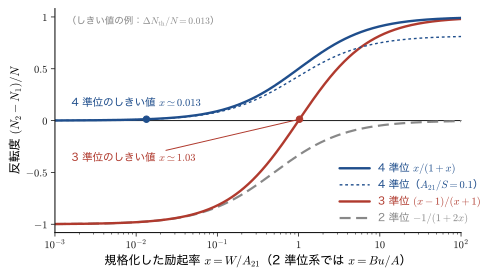
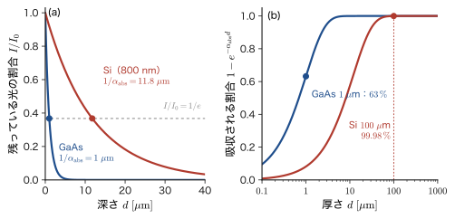
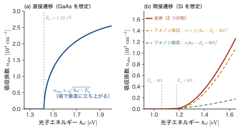
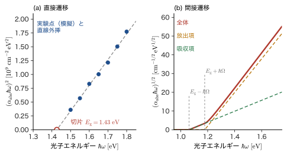
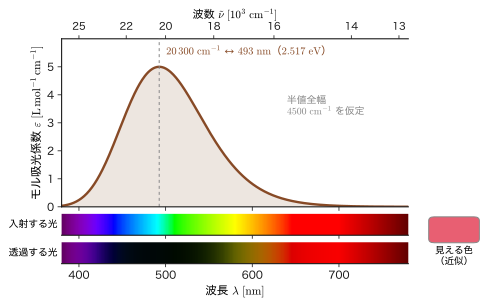

第53章誘導放出とレーザー，材料の光吸収スペクトル
暗い部屋で赤いレーザーポインターを壁に向けると，細くて鮮やかな光の点が映る．白熱電球は，あらゆる方向へ，さまざまな波長の光を位相もばらばらに出すのに，レーザーは，ほとんど 1 つの波長で，位相のそろった光を，ほとんど 1 方向へだけ出す．この違いを生む仕掛けが，前章で学んだ誘導放出である．誘導放出では，入ってきた光子とそっくり同じ光子（同じ振動数，向き，偏光，位相）がもう 1 個生まれる．光子が 1 個から 2 個，2 個から 4 個と増えていけば，光は雪だるま式に強くなる．ところが，ふつうの物質は光を吸収して暗くする．吸収と誘導放出は，Einstein の係数で見たとおり（第52章），同じ確率で起こる．光が強くなるか弱くなるかを決めるのは，「上の準位の原子」と「下の準位の原子」のどちらが多いかという，たった 1 点である．この章の前半（53.1〜53.2 節）では，そこから出発して，上の準位のほうが多い特別な状態（反転分布）がなぜ必要か，どうすれば作れるか（3 準位・4 準位），そしてルビー・Nd:YAG・半導体のレーザーがどう違うかを学ぶ．
後半（53.3〜53.5 節）では，同じ吸収・放出の量子力学を，材料の光吸収スペクトルの読み方に使う．光の強さは物質の中を進むにつれて $I=I_0e^{-\alpha_{\mathrm{abs}}d}$ と減る．この形は古典物理の光の吸収（AD 03「大学基礎物理学」第13章 13.3 の屈折率の拡張）と同じだが，吸収係数 $\alpha_{\mathrm{abs}}$ が波長によって何桁も変わるのは，量子力学的な準位の間隔と遷移の行列要素が決めているからである．この章の後半は，次の 4 つの問いに答える．
- なぜガラスは可視光を通すのか（53.4 節）——光子のエネルギーが，価電子を持ち上げられるどの準位の間隔にも届かないから．
- なぜシリコンは可視光を黒く吸うのか（53.4 節）——バンドギャップより大きなエネルギーの光子が，価電子を伝導帯へ持ち上げるから．
- なぜルビーは赤いのか（53.5 節）——$\mathrm{Cr^{3+}}$ の $d$ 電子が緑を吸うから．
- なぜ一酸化炭素は 4.67 μm の赤外線を吸うのか（53.5 節）——分子が，調和振動子の梯子を 1 段上がるから．
この章では，こうした吸収の強さと形を，黄金律（第51章）と電気双極子近似（第52章）から導く．古典物理の「光の吸収」と違うのは，吸収がとびとびの準位の間の遷移として起こり，その強さが行列要素の 2 乗で決まり，許される遷移と禁じられた遷移の強さが 4 桁以上も違うことである．
- 吸収・誘導放出・自然放出から光増幅の式 $\dd I/\dd z=\sigma(N_2-N_1)I$ を導き，Beer–Lambert の吸収とレーザーの利得が同じ式の 2 つの場合（$N_1\gt N_2$ と $N_2\gt N_1$）であることを説明できる
- 2 準位系では，位相のそろわない励起の定常状態で $N_2/N_1=Bu/(A+Bu)\lt1$ となり，定常的な反転分布が作れないことを示し，3 準位系（ルビー型）と 4 準位系（Nd:YAG 型）の反転の条件としきい値を，レート方程式から計算できる
- 共振器の「利得 = 損失」の条件から，レーザー発振のしきい値を見積もれる．ルビー（694.3 nm = 1.786 eV），Nd:YAG（1064 nm），半導体レーザー，量子カスケードレーザーの波長を，準位の間隔から見積もれる
- 吸収係数 $\alpha_{\mathrm{abs}}=N\sigma$，吸光度 $A=\varepsilon c_{\mathrm M}\ell$，モル吸光係数 $\varepsilon$，吸収断面積 $\sigma$ を換算し，黄金律から振動子強度 $f=2m\omega\abs{x_{fi}}^2/\hbar$ と積分吸収断面積 $\int\sigma\dd\nu=e_0^2f/(4\varepsilon_0m_{\mathrm e}c)=\pi r_{\mathrm e}cf$ を導ける
- 半導体のバンド間遷移から，直接遷移の $\alpha_{\mathrm{abs}}\propto\sqrt{\hbar\omega-E_{\mathrm g}}$ と間接遷移の $\alpha_{\mathrm{abs}}\propto(\hbar\omega-E_{\mathrm g}\pm\hbar\Omega)^2$ を導き，Tauc プロットでバンドギャップを読み取れる．光子の波数がブリルアン域の 0.002 倍にすぎないことから「垂直遷移」を説明できる
- 遷移金属錯体の色（$[\mathrm{Ti(H_2O)_6}]^{3+}$ の 20 300 $\mathrm{cm^{-1}}$ → 493 nm）と，分子の赤外吸収（CO の 2143 $\mathrm{cm^{-1}}$ → 0.2657 eV → 4.67 μm，選択則 $\Delta n=\pm1$）を，選択則と Franck–Condon（フランク–コンドン）の原理で説明できる
もとにしたノート：本章はノートにない内容を補った章である．関連するノート：望月泰英『物理学ノート 量子力学3』（手書き講義ノート）pp. 69–71（時間依存の量子力学），およびノート写真（LCAO の欄外の疑問：反転対称性と直接・間接遷移）．
53.1 光の増幅と反転分布 — 吸収と誘導放出の差し引き
53.1.1 光が物質を通り抜けるとき，増えるか減るか
単色光（振動数が 1 つに決まった光）のビームが，物質の中を $+z$ 方向へ進んでいる．物質の原子（分子，イオンでもよい）は，エネルギーが $E_1$ の下準位と $E_2$ の上準位の間の遷移が光と共鳴する（$\hbar\omega\simeq E_2-E_1$）とする．前章のとおり，この光は 3 つの過程を起こす．下準位の原子が光子を 1 個吸収して上準位へ上がる吸収，上準位の原子が光に誘われて光子を 1 個増やす誘導放出，光がなくても上準位の原子が自発的に光を出す自然放出である．自然放出の光は，ほぼ全方向へ，位相もばらばらに出るので，ビームの強さにはほとんど寄与しない．ビームを増やしたり減らしたりするのは，吸収と誘導放出の 2 つである．
単位体積あたりの下準位の原子数を $N_1$，上準位の原子数を $N_2$（単位は $\mathrm{m^{-3}}$）とし，光の強度（単位面積・単位時間あたりに運ばれるエネルギー）を $I\ [\mathrm{W/m^2}]$ とする．光子 1 個のエネルギーは $\hbar\omega$ だから，単位面積・単位時間あたりに通り抜ける光子の数（光子の流束）は $\Phi=I/\hbar\omega$ である．原子 1 個が，流束 $\Phi$ の光の光子を吸収して下準位から上準位へ移る確率（単位時間あたり）は，$\Phi$ に比例するので $\sigma\Phi$ と書ける．比例定数 $\sigma$ は面積の次元（$\mathrm{m^2}$）をもち，吸収断面積（absorption cross section）とよばれる（光子を受け止める「的の面積」と考えるとよい）．断面積の大きさは遷移の強さ（行列要素）と，共鳴からのずれで決まる．誘導放出も同じ大きさの断面積をもつ．実際，縮退度が等しい（$g_1=g_2$）とき，Einstein の係数は $B_{12}=B_{21}$ だった（第52章）．したがって，上準位の原子 1 個が誘導放出で光子を 1 個増やす確率も，単位時間あたり $\sigma\Phi$ である．
導出：光増幅の式
ビームの進行方向に垂直な面積 $S$ の薄い層（厚さ $\dd z$）を考える．層の中の下準位の原子は $N_1S\,\dd z$ 個，上準位の原子は $N_2S\,\dd z$ 個である．単位時間に，吸収で失われる光子は $\sigma\Phi\cdot N_1S\,\dd z$ 個，誘導放出で増える光子は $\sigma\Phi\cdot N_2S\,\dd z$ 個である．一方，層を通り抜ける光子の流束の変化は，面積 $S$ をかけて単位時間あたりの光子数の変化として $S\,\dd\Phi$ である．したがって
$$ S\,\dd\Phi=\sigma\Phi\,(N_2-N_1)\,S\,\dd z $$となる．両辺を $S\,\dd z$ で割り，$I=\hbar\omega\,\Phi$（$\hbar\omega$ は定数）を使うと，次の式を得る．
\begin{equation} \diff{I}{z}=\sigma\,(N_2-N_1)\,I \label{eq:53-gain} \end{equation}各辺の次元は $\mathrm{W\,m^{-3}}$ で，$\sigma\,[\mathrm{m^2}]\times N\,[\mathrm{m^{-3}}]$ が $[\mathrm{m^{-1}}]$ だから整合している． （導出終わり）
吸収断面積 $\sigma$ は，前章の Einstein の $B$ 係数と結びついている．強度 $I$ の単色光は，エネルギー密度 $I/c$ の放射（真空中の場合．物質の中では $c$ を $c/n_{\mathrm r}$ に置き換える）だから，共鳴線の形を規格化された関数 $g(\omega)$（$\int g(\omega)\dd\omega=1$．線幅は前章）で表すと，原子 1 個あたりの遷移の確率は $B\,(I/c)\,g(\omega)$ である．これを光子の流束 $\Phi=I/\hbar\omega$ で割れば断面積が得られる：
\begin{equation} \sigma(\omega)=\frac{\hbar\omega}{c}\,B\,g(\omega)=\frac{\pi\omega\,\abs{d_{12}}^2}{3\varepsilon_0\hbar c}\,g(\omega) \label{eq:53-sigmaB} \end{equation}第 2 の等号では，前章の $B=\pi\abs{d_{12}}^2/(3\varepsilon_0\hbar^2)$ を使った（$d_{12}$ は電気双極子の行列要素）．つまり，断面積は遷移双極子の大きさの 2 乗に比例し，共鳴の近くで線の形 $g(\omega)$ をなぞる．線が鋭いほど（$g$ の山が高いほど），ピークの断面積は大きい．
式 \eqref{eq:53-gain} の右辺の係数 $\sigma(N_2-N_1)$ は $z$ によらない定数なので（$I$ が小さいとき），解は指数関数である：
\begin{equation} I(z)=I_0\exp\bigl[\sigma(N_2-N_1)\,z\bigr] \label{eq:53-gainsol} \end{equation}ここで $I_0$ は $z=0$ での強度である．指数の係数の符号によって，物質は光を弱めたり，強めたりする．
定義53.1 吸収と利得，反転分布
(1) $N_1\gt N_2$ のとき，$\alpha_{\mathrm{abs}}\equiv\sigma(N_1-N_2)\gt0$ とおくと $I=I_0e^{-\alpha_{\mathrm{abs}}z}$ となり，光は指数的に弱まる．$\alpha_{\mathrm{abs}}$ を吸収係数（absorption coefficient，単位 $\mathrm{m^{-1}}$）という．これが Beer–Lambert の法則（53.3 節）である．
(2) $N_2\gt N_1$ のとき，$\gamma\equiv\sigma(N_2-N_1)\gt0$ とおくと $I=I_0e^{\gamma z}$ となり，光は指数的に強まる．$\gamma$ を利得係数（gain coefficient，単位 $\mathrm{m^{-1}}$）という．上準位の原子のほうが下準位より多い状態 $N_2\gt N_1$ を反転分布（population inversion）とよぶ．
縮退度が異なる場合（$g_1\ne g_2$）は，Einstein の関係 $g_1B_{12}=g_2B_{21}$ から，式 \eqref{eq:53-gain} の $N_2-N_1$ を $N_2-(g_2/g_1)N_1$ に置き換える．反転分布の条件は $N_2/g_2\gt N_1/g_1$ である．
つまり，Beer–Lambert の吸収（光が物質に吸われて弱くなる）と，レーザーの増幅（光が物質から絞り取られて強くなる）は，同じ式 \eqref{eq:53-gain} の 2 つの場合にすぎない．光の増幅は「負の吸収」と思ってもよい．レーザー（LASER）という名前は，Light Amplification by Stimulated Emission of Radiation（誘導放出による光の増幅）の頭文字である．
イメージ：誘導放出は「そっくりコピー」
誘導放出で生まれる光子は，入射した光子と，振動数も，進む向きも，偏光も，位相まで同じである．古典物理の言葉で言えば，入射波に揺さぶられて振動している電子（双極子）が，入射波と同位相の波を上乗せして出す，ということである．吸収では，原子は入射波と逆位相の波をつくって入射波を弱め，誘導放出では同位相の波をつくって強める．だから増幅された光は，位相のそろった（コヒーレントな）きれいな波になる．これが，電球の光（自然放出の集まり．位相がばらばら）と，レーザーの光の決定的な違いである．
53.1.2 熱平衡では，必ず吸収になる
ふつうの物質は，熱平衡（温度 $T$）にある．このとき，準位 $E_1$，$E_2$ の占有数は Boltzmann 分布に従い，
\begin{equation} \frac{N_2/g_2}{N_1/g_1}=\exp\left(-\frac{E_2-E_1}{k_{\mathrm B}T}\right)=e^{-\hbar\omega/k_{\mathrm B}T}\ \lt\ 1 \label{eq:53-boltz} \end{equation}である．温度が正である限り，上の準位のほうが（縮退度あたりで）必ず少ない．したがって熱平衡では式 \eqref{eq:53-gain} の係数はいつも負で，物質は光を吸収する．たとえば，ルビーの遷移 $\hbar\omega=1.786\ \mathrm{eV}$ では，室温（$k_{\mathrm B}T=0.02585\ \mathrm{eV}$）で $N_2/N_1=e^{-69.1}\approx10^{-30}$ である．太陽の表面温度 $6000\ \mathrm{K}$（$k_{\mathrm B}T=0.517\ \mathrm{eV}$）でさえ $e^{-3.45}=0.032$ にすぎない．$T\to\infty$ の極限で $N_2/g_2=N_1/g_1$ になるが，これは「吸収も利得もない」透明な状態にすぎない．反転分布は，どんな正の温度の熱平衡にも対応しない．熱平衡から大きく外れた状態（非平衡）を外から作り出さなければ，光は増幅されない．（式 \eqref{eq:53-boltz} の $T$ を形式的に負にすると反転分布になる．そのため反転分布の状態を「負の温度」とよぶこともある．）
関連シミュレーター：Planck の公式（温度を変えると熱放射の光の強さと色がどう変わるか．高温でも上の準位の占有数が下の準位を超えないことと対応する）．
53.1.3 2 準位系では，定常的な反転分布が作れない
それでは，強い光で下準位の原子をどんどん上準位へ押し上げれば，反転できるだろうか．2 つの準位だけをもつ原子に，放射エネルギー密度 $u$（前章のとおり，単位体積・単位角振動数あたりの放射のエネルギー）の光を当て続けたときの，定常状態を考えよう．$g_1=g_2$，$B_{12}=B_{21}\equiv B$，$A_{21}\equiv A$ とする．上準位の占有数の変化は，吸収による増加，誘導放出による減少，自然放出による減少の和で，
\begin{equation} \diff{N_2}{t}=B\,u\,N_1-B\,u\,N_2-A\,N_2 \label{eq:53-rate2} \end{equation}である．定常状態では $\dd N_2/\dd t=0$ だから，$Bu\,N_1=(Bu+A)N_2$，すなわち
\begin{equation} \frac{N_2}{N_1}=\frac{B\,u}{A+B\,u}\ \lt\ 1 \label{eq:53-2level} \end{equation}を得る．右辺は，$u$ がどんなに大きくても 1 より小さい．強い光をあてる極限 $u\to\infty$ で $N_2/N_1\to1$ に近づくだけで，$N_2\gt N_1$ にはならない．全原子数 $N=N_1+N_2$ を使って占有数を書くと
\begin{equation} N_2=\frac{Bu}{A+2Bu}\,N,\qquad N_1=\frac{A+Bu}{A+2Bu}\,N,\qquad N_2-N_1=-\frac{A}{A+2Bu}\,N\lt0 \label{eq:53-2levelN} \end{equation}である．$u\to\infty$ では $N_2\to N/2$（ちょうど半分）で，吸収係数 $\alpha_{\mathrm{abs}}=\sigma(N_1-N_2)=\sigma N/(1+2Bu/A)$ は 0 に向かう．これは吸収の飽和（透明化，bleaching）とよばれる現象で，光が強すぎると吸収が弱まって物質が透明になる．なぜだろうか．吸収と誘導放出の確率が等しいので，光子が吸収されるたびに，それとほぼ同じ頻度で誘導放出が起こり，差し引きで光の強さを変えられなくなるからである．
注意：「反転できない」が成り立つ範囲
ここで示したのは，位相の情報を捨てたレート方程式で，位相のそろわない励起を続けたときの定常状態の結果である．共鳴するコヒーレントな光を Rabi 振動の半周期だけ当てる（π パルス．第51章 51.3 節）と，2 準位系でも一時的に $N_2\gt N_1$ にできる．しかし，これは位相緩和（固体ではピコ秒の桁のことが多い）や自然放出の時間で消える過渡的な状態である．連続して光を増幅し続けるには，3 準位系・4 準位系が要る．
例題53.1 2 準位系：熱平衡との一致と飽和
(1) 熱放射（温度 $T$，空洞放射）の中の 2 準位系で，式 \eqref{eq:53-2level} が Boltzmann 分布 \eqref{eq:53-boltz} に一致することを示せ．前章の関係 $A/(Bu)=e^{\hbar\omega/k_{\mathrm B}T}-1$ を使ってよい．(2) 2 準位系の吸収係数が $\alpha_{\mathrm{abs}}(u)=\alpha_0/(1+2Bu/A)$（$\alpha_0=\sigma N$）となることを示し，$Bu/A=10$ のとき $\alpha_{\mathrm{abs}}$ が $\alpha_0$ の何分の 1 になるか求めよ．
解答 (1) $x\equiv\hbar\omega/k_{\mathrm B}T$ とおくと，前章の関係から $Bu/A=1/(e^x-1)$ である．これを式 \eqref{eq:53-2level} に代入する： $$ \frac{N_2}{N_1}=\frac{Bu/A}{1+Bu/A}=\frac{1/(e^x-1)}{1+1/(e^x-1)}=\frac{1}{(e^x-1)+1}=e^{-x} $$ となって，$g_1=g_2$ の Boltzmann 分布 \eqref{eq:53-boltz} に一致する．つまり，熱放射の光（自然放出・吸収・誘導放出が釣り合った光）の中では，原子の占有数は Boltzmann 分布に落ち着くので，熱放射では決して反転分布にならない．
(2) 式 \eqref{eq:53-2levelN} より $N_1-N_2=NA/(A+2Bu)=N/(1+2Bu/A)$ なので，$\alpha_{\mathrm{abs}}=\sigma(N_1-N_2)=\sigma N/(1+2Bu/A)=\alpha_0/(1+2Bu/A)$．$Bu/A=10$ では $\alpha_{\mathrm{abs}}=\alpha_0/21$，すなわち $4.8\,\%$ まで弱まる（占有数の比は $N_2/N_1=10/11=0.909$）．光を強くすると，吸収は 0 に近づくが，利得にはならない． $Bu/A=1/2$ で $\alpha_{\mathrm{abs}}$ はちょうど半分になる．
53.1.4 3 準位系と 4 準位系 — 第 3 の準位を使う
反転分布を作るには，吸収と誘導放出が「同じ 2 準位の間の，逆向きの過程」であることから抜け出さなければならない．光でポンプする準位（ポンプ準位）とレーザー遷移の準位を別の準位にし，ポンプ準位からレーザーの上準位へは光を出さずに（熱として）速やかに落ちるようにするのである．このとき，ポンプの光は誘導放出を起こさない（ポンプ準位にはほとんど原子がたまらない）ので，上準位 2 に原子をためていける．図53.1 に，2 準位系，3 準位系，4 準位系を比べた．
3 準位系（図53.1(b)）：準位 1 が基底状態，準位 2 がレーザーの上準位（準安定準位．寿命が長い），準位 3 が光でポンプされる励起帯である．ポンプ光で基底状態の原子が単位時間あたり確率 $W$ で準位 3 へ励起され，準位 3 から準位 2 へは，無輻射の速い緩和（速度 $S_{32}$）で落ちる．準位 2 は，レーザー光がない状態で，速度 $A_{21}$（$=1/\tau$．寿命 $\tau$ の逆数．自然放出と無輻射の緩和の和）で基底状態へ落ちる．準位 3 の占有数の定常状態は，$\dd N_3/\dd t=WN_1-S_{32}N_3=0$ から $N_3=(W/S_{32})N_1$ で，$S_{32}\gg W$ ならほぼ 0 になる（準位 3 には原子がたまらない）．準位 2 の方程式は $\dd N_2/\dd t=S_{32}N_3-A_{21}N_2=WN_1-A_{21}N_2=0$ となるので，
\begin{equation} N_2=\frac{W}{A_{21}}\,N_1,\qquad \frac{N_2-N_1}{N}=\frac{x-1}{x+1}\quad\left(x\equiv\frac{W}{A_{21}},\ N=N_1+N_2\right) \label{eq:53-3level} \end{equation}である．反転分布 $N_2\gt N_1$ の条件は $x\gt1$，すなわちポンプの速度が準位 2 の崩壊速度より大きいこと（$W\gt A_{21}=1/\tau$）である．このとき，基底状態の原子の半分以上が準位 2 に上がっている．これが，3 準位系がたくさんのポンプエネルギーを必要とする理由である．反対に，準位 2 の寿命 $\tau$ が長い（$A_{21}$ が小さい）ほど，必要なポンプ速度は小さくなる．前章で見たとおり自然放出率は $A\propto\omega^3\abs{d_{12}}^2$ だから，電気双極子が禁制の遷移（$d$–$d$ 遷移の Laporte 禁制，$f$–$f$ 遷移，スピン禁制）は寿命が長く，準安定準位になれる．禁制遷移の「欠点」（吸収が弱い）が，ここでは「利点」（蓄積できる）になる．
4 準位系（図53.1(c)）：レーザー遷移の下準位 1 を，基底状態 0 より上に置く．下準位 1 は，基底状態へ速い無輻射緩和（速度 $S_{10}$）で空になる．定常状態で，準位 3 は空（ほぼ）とすると，準位 2 の式 $\dd N_2/\dd t=WN_0-A_{21}N_2=0$ から $N_2=(W/A_{21})N_0$，準位 1 の式 $\dd N_1/\dd t=A_{21}N_2-S_{10}N_1=0$ から $N_1=(A_{21}/S_{10})N_2\equiv rN_2$（$r=A_{21}/S_{10}$）である．全原子数 $N=N_0+N_1+N_2$ から
\begin{equation} \frac{N_2-N_1}{N}=\frac{x\,(1-r)}{1+x\,(1+r)}\ \xrightarrow{\ r\to0\ }\ \frac{x}{1+x} \label{eq:53-4level} \end{equation}を得る（$x=W/A_{21}$．導出は演習53.1）．$r\lt1$（下準位の緩和が上準位の崩壊より速い）であれば，どんなに小さなポンプでも $N_2\gt N_1$ になる．また，下準位 1 のエネルギーが $k_{\mathrm B}T$ より十分高ければ，熱励起で下準位に原子が溜まる心配もない．4 準位系は，ポンプ速度のしきい値が 3 準位系よりずっと小さい．
| 系 | レーザーの下準位 | 反転度 $(N_2-N_1)/N$ | 反転の条件 | 例 |
|---|---|---|---|---|
| 2 準位 | 基底状態 | $-1/(1+2x)$（$x=Bu/A$） | どんな $x$ でも不可（定常状態） | （なし） |
| 3 準位 | 基底状態 | $(x-1)/(x+1)$ | $x\gt1$（半分以上を励起） | ルビー（$\mathrm{Cr^{3+}{:}Al_2O_3}$） |
| 4 準位 | 基底状態の上の準位（速く空になる） | $x(1-r)/[1+x(1+r)]\to x/(1+x)$ | $x\gt0$（$r\lt1$ なら少しでよい） | Nd:YAG，He–Ne |

例題53.2 ルビーロッドの励起：光子数・励起の割合・蓄えるエネルギー
ルビー（$\mathrm{Cr^{3+}{:}Al_2O_3}$）のロッドがある．$\mathrm{Cr^{3+}}$ の濃度は $1.6\times10^{19}\ \mathrm{cm^{-3}}$，体積は $5\ \mathrm{cm^3}$ とする（濃度は第48章 48.4 節のレーザー用ルビーの値）．レーザー遷移は $694.3\ \mathrm{nm}$，上準位の寿命は $\tau=3\ \mathrm{ms}$ である．(1) 光子 1 個のエネルギーを eV と J で求めよ．(2) エネルギー $1\ \mathrm{J}$ のパルスに含まれる光子の数と，それを出すのに必要な $\mathrm{Cr^{3+}}$ の割合を求めよ．(3) 反転分布のためには，少なくとも $\mathrm{Cr^{3+}}$ の半数（縮退度の補正を無視）を上準位へ励起しなければならない．その半数の励起状態に蓄えられるエネルギーはいくらか．(4) 3 準位系の，しきい値のポンプ速度 $W$ はいくらか．また，半数の励起状態から自然放出などで失われるエネルギーの単位時間あたりの量（電力）はいくらか．
解答 (1) $hc=1239.84\ \mathrm{eV\,nm}$ より，$\hbar\omega=1239.84/694.3=1.786\ \mathrm{eV}$．J に直すと $1.786\times1.602\times10^{-19}=2.861\times10^{-19}\ \mathrm{J}$ である．
(2) $1\ \mathrm{J}$ あたりの光子数は $1/(2.861\times10^{-19})=3.50\times10^{18}$ 個．ロッド中の $\mathrm{Cr^{3+}}$ の総数は $1.6\times10^{19}\times5=8.0\times10^{19}$ 個だから，光子 1 個を出すのに $\mathrm{Cr^{3+}}$ 1 個の遷移を使うとして，その割合は $3.50\times10^{18}/(8.0\times10^{19})=4.4\,\%$ である．
(3) 半数は $4.0\times10^{19}$ 個で，蓄えるエネルギーは $4.0\times10^{19}\times2.861\times10^{-19}\ \mathrm{J}=11.4\ \mathrm{J}$ である．$1\ \mathrm{J}$ のパルスを取り出すために，その 11 倍以上のエネルギーを，あらかじめ励起状態として蓄えなければならない．
(4) 式 \eqref{eq:53-3level} のしきい値 $x=1$ から，$W=A_{21}=1/\tau=1/(3\times10^{-3}\ \mathrm{s})=3.3\times10^2\ \mathrm{s^{-1}}$ である．半数の励起状態を保つために失われる電力は $(4.0\times10^{19}/\tau)\hbar\omega=4.0\times10^{19}\times333\times2.861\times10^{-19}\ \mathrm{W}=3.8\times10^3\ \mathrm{W}$（$763\ \mathrm{W/cm^3}$）である．この大きな損失を補いながら励起を続けるのは難しいので，ルビーレーザーは，閃光ランプで寿命 $\tau$ より短い時間に一気に励起するパルス動作で使われる．（第48章では，縮退度と $\mathrm{R_1}$ 準位の占有率を考慮して，必要な励起の割合を約 $48\,\%$ とした．）
53.1.5 共振器としきい値 — 利得 = 損失
反転分布の物質は，光を通すたびに $e^{\gamma\ell}$ 倍にする（$\ell$ は物質の長さ）．しかし 1 回通るだけの増幅では，ふつう足りない．そこで，物質の両端に 2 枚の鏡（反射率 $R_1$，$R_2$）を向かい合わせに置き，光を往復させる．この鏡の対を共振器（Fabry–Pérot（ファブリ–ペロー）共振器）という．光が 1 往復するたびに，強度は $e^{2\gamma\ell}$ 倍に増幅され，鏡で $R_1R_2$ 倍に減る（回折損失や散乱損失などはここでは無視する）．1 往復で強度がちょうど元に戻る条件が，発振のしきい値である：
\begin{equation} R_1R_2\,e^{2\gamma_{\mathrm{th}}\ell}=1\quad\Longrightarrow\quad \gamma_{\mathrm{th}}=\frac{1}{2\ell}\ln\frac{1}{R_1R_2},\qquad \Delta N_{\mathrm{th}}=\frac{\gamma_{\mathrm{th}}}{\sigma}\equiv(N_2-N_1)_{\mathrm{th}} \label{eq:53-threshold} \end{equation}利得係数 $\gamma=\sigma(N_2-N_1)$ がこのしきい値 $\gamma_{\mathrm{th}}$ を超えると，自然放出の光のうち軸方向に進むものが，往復するたびに強まって，レーザー光になる．つまり利得が損失と等しくなるのがしきい値である．共振器は，もう 1 つの大切な役割をもつ．鏡の間に $n_{\mathrm r}\ell$ の光路長（$n_{\mathrm r}$ は物質の屈折率）に収まる定在波だけが強め合うので，$2n_{\mathrm r}\ell=p\lambda$（$p$ は整数）を満たす波長（縦モード）だけが発振できる．隣り合うモードの振動数の間隔は $\Delta\nu=c/(2n_{\mathrm r}\ell)$ である．
導出：しきい値を超えたあとの定常状態（4 準位系の簡単な模型）
共振器の中の光子数密度を $n_{\mathrm{ph}}$ とする．光は物質の中を速さ $c/n_{\mathrm r}$ で進むので，利得係数 $\gamma$ のもとで $n_{\mathrm{ph}}$ は単位時間に $(c/n_{\mathrm r})\gamma n_{\mathrm{ph}}$ の割合で増え，共振器の損失（単位長さあたりの損失 $\gamma_{\mathrm{th}}$ に当たる）で $(c/n_{\mathrm r})\gamma_{\mathrm{th}}n_{\mathrm{ph}}$ の割合で減る：
$$ \diff{n_{\mathrm{ph}}}{t}=\frac{c}{n_{\mathrm r}}\,(\gamma-\gamma_{\mathrm{th}})\,n_{\mathrm{ph}},\qquad \gamma=\sigma N_2\quad(N_1\simeq0) $$上準位の方程式は，ポンプ（単位体積・単位時間あたり $R_{\mathrm p}$ 個）と，自然放出 $N_2/\tau$ と，誘導放出 $(c/n_{\mathrm r})\sigma N_2n_{\mathrm{ph}}$ で $\dd N_2/\dd t=R_{\mathrm p}-N_2/\tau-(c/n_{\mathrm r})\sigma N_2n_{\mathrm{ph}}$ である．$n_{\mathrm{ph}}\gt0$ の定常状態では，$n_{\mathrm{ph}}$ の式から $\gamma=\gamma_{\mathrm{th}}$，すなわち $N_2=\gamma_{\mathrm{th}}/\sigma=N_{\mathrm{th}}$ に固定される（利得の飽和）．これを上準位の式に入れると，$(c/n_{\mathrm r})\sigma N_{\mathrm{th}}n_{\mathrm{ph}}=R_{\mathrm p}-N_{\mathrm{th}}/\tau$，すなわち
$$ n_{\mathrm{ph}}=\frac{n_{\mathrm r}}{c\,\gamma_{\mathrm{th}}}\,\bigl(R_{\mathrm p}-R_{\mathrm{th}}\bigr),\qquad R_{\mathrm{th}}=\frac{N_{\mathrm{th}}}{\tau} $$となる．ポンプをしきい値 $R_{\mathrm{th}}$ より強めても，反転分布の大きさ $N_2$ は $N_{\mathrm{th}}$ から増えず，余分なポンプのエネルギーは，すべてレーザー光の光子数 $n_{\mathrm{ph}}$ に回る．レーザーの出力がしきい値を超えると，ポンプの強さに比例して増える理由がこれである． （導出終わり）
例題53.3 ルビーロッドのしきい値と，4 準位系との比較
長さ $\ell=10\ \mathrm{cm}$ のルビーロッドの両端に，反射率 $R_1=1$（全反射鏡）と $R_2=0.9$ の鏡を置く．$\mathrm{R_1}$ 線（694.3 nm）の誘導放出断面積を $\sigma=2.5\times10^{-20}\ \mathrm{cm^2}$（文献値．この値は縮退度などを含めた有効な値として使う），$\mathrm{Cr^{3+}}$ の濃度を $N=1.6\times10^{19}\ \mathrm{cm^{-3}}$ とする．(1) しきい値の利得係数 $\gamma_{\mathrm{th}}$ と反転分布 $\Delta N_{\mathrm{th}}$ を求めよ．(2) 3 準位系として，しきい値で上準位にいなければならない原子の割合 $N_2/N$ を求めよ．(3) 同じ $\sigma$ をもつ 4 準位系の（仮想の）結晶なら，同じ $\Delta N_{\mathrm{th}}$ を作るために励起すべき割合はいくらか．蓄えるエネルギーは何倍違うか．(4) ロッドの屈折率を $n_{\mathrm r}=1.76$ として，縦モードの間隔 $\Delta\nu$ を求めよ．
解答 (1) 式 \eqref{eq:53-threshold} より $\gamma_{\mathrm{th}}=\dfrac{1}{2\times10\ \mathrm{cm}}\ln\dfrac{1}{1\times0.9}=\dfrac{0.10536}{20}\ \mathrm{cm^{-1}}=5.27\times10^{-3}\ \mathrm{cm^{-1}}$．$\Delta N_{\mathrm{th}}=\gamma_{\mathrm{th}}/\sigma=5.27\times10^{-3}/(2.5\times10^{-20})=2.1\times10^{17}\ \mathrm{cm^{-3}}$ である．
(2) 3 準位系では，$N_1+N_2=N$，$N_2-N_1=\Delta N_{\mathrm{th}}$ から $N_2=(N+\Delta N_{\mathrm{th}})/2$ なので，$N_2/N=\dfrac12\left(1+\dfrac{2.1\times10^{17}}{1.6\times10^{19}}\right)=\dfrac12(1+0.0132)=0.507$ である．つまり，半数より 0.7 % だけ多く励起すればよい．しきい値を決めるのはほとんど「半分」の条件で，鏡の反射率や $\sigma$ にはあまり依存しない．（式 \eqref{eq:53-3level} より，しきい値は $x=(1+0.0132)/(1-0.0132)=1.027$．図53.2 の赤い点．）
(3) 4 準位系では $N_1\simeq0$ なので $N_2=\Delta N_{\mathrm{th}}$，割合は $2.1\times10^{17}/1.6\times10^{19}=1.3\,\%$ である（式 \eqref{eq:53-4level} で $x/(1+x)=0.0132$ から $x=0.0134$．図53.2 の青い点）．蓄えるエネルギーの比は $0.507/0.0132=38$ 倍である．4 準位系のほうが，しきい値のエネルギーが 1 桁以上小さい．
(4) $\Delta\nu=c/(2n_{\mathrm r}\ell)=3.00\times10^8/(2\times1.76\times0.10)=8.5\times10^8\ \mathrm{Hz}=0.85\ \mathrm{GHz}$ である．ルビーの $\mathrm{R_1}$ 線の幅（室温で数百 GHz の桁）の中に，縦モードが数百本並ぶことになる．
53.2 レーザー — ルビー，Nd:YAG，半導体レーザー
誘導放出による増幅の原理は，まず波長の長いマイクロ波で実現された．1954 年に，Gordon（ゴードン），Zeiger（ザイガー），Townes（タウンズ）が，アンモニア分子の反転分布を使って，マイクロ波の増幅器（メーザー．MASER．Microwave Amplification by Stimulated Emission of Radiation）をつくった．電場の中でエネルギーが上がる上の準位の分子だけを，不均一な電場で分子線から選び出して共振器に入れると，反転分布が得られる（第28章の応用，第50章）．1958 年に，Schawlow（ショーロー）と Townes が，同じ原理を可視・赤外の光へ拡げる方法（2 枚の鏡ではさんだ共振器）を提案し，1960 年に Maiman（メイマン）が，ルビーで最初のレーザーの発振に成功した．この節では，前節の 3 準位系・4 準位系の考え方を，実在の 3 種類のレーザーに当てはめる．
53.2.1 ルビーレーザー — 3 準位の最初のレーザー
ルビーは，コランダム $\mathrm{Al_2O_3}$ の $\mathrm{Al^{3+}}$ の一部を，$\mathrm{Cr^{3+}}$（$3d^3$）で置き換えた結晶である（重さで $\mathrm{Cr_2O_3}$ に換算して約 $0.05\,\%$．第48章 48.4 節）．$\mathrm{Cr^{3+}}$ の準位のようすを図53.3 に示す．基底状態 ${}^4A_2$ から，スピン許容で幅の広い 2 本の吸収帯 ${}^4T_2$（$555.6\ \mathrm{nm}$，約 $18\,000\ \mathrm{cm^{-1}}$）と ${}^4T_1$（$404.9\ \mathrm{nm}$，約 $24\,700\ \mathrm{cm^{-1}}$）へ，キセノンの閃光ランプの光で励起する．励起された $\mathrm{Cr^{3+}}$ は，ピコ秒からナノ秒の無輻射緩和で，格子に余りのエネルギーを熱として渡しながら，鋭い準位 ${}^2E$（約 $14\,400\ \mathrm{cm^{-1}}$，$1.786\ \mathrm{eV}$）へ落ちる．${}^2E$ から基底状態 ${}^4A_2$ への遷移は，スピン禁制（二重項 → 四重項）なので，寿命が約 $3\ \mathrm{ms}$ と長い．この準安定準位 ${}^2E$ に励起された $\mathrm{Cr^{3+}}$ がたまり，基底状態の半数以上に達すると（53.1.4 節），誘導放出が吸収を上回り，波長 $694.3\ \mathrm{nm}$（$\hbar\omega=1.786\ \mathrm{eV}$）の赤い光が増幅される．これは，前節の 3 準位系そのものである．励起帯が広いので，白色に近いランプの光を効率よく使える．この点が，ルビーの $d$–$d$ 吸収帯の性質（電子と格子振動の結合が強く，幅が広い．53.5 節）の，レーザーにとっての利点である．レーザー遷移の ${}^2E\to{}^4A_2$ のほうは，電子の配置が変わらず（$(t_{2g})^3$ のまま），結合の距離が変わらないので，線が鋭い（第48章）．
ルビーレーザーは，3 準位系なので，しきい値が高い．例題53.2 で見たとおり，$5\ \mathrm{cm^3}$ のロッドに $11\ \mathrm{J}$ 以上を励起状態として蓄えなければならない．そのため，連続でなく，閃光ランプによるパルス動作になる．今日では，より効率のよい 4 準位系が主流だが，ルビーは，「レーザーは誘導放出から作れる」ことを最初に実証した結晶として歴史に残った（T. H. Maiman, Nature 187, 493 (1960)）．
53.2.2 Nd:YAG レーザー — 4 準位の固体レーザー
Nd:YAG は，イットリウム・アルミニウム・ガーネット（$\mathrm{Y_3Al_5O_{12}}$，YAG）の $\mathrm{Y^{3+}}$ の一部（約 1 原子 % ）を，ネオジム $\mathrm{Nd^{3+}}$（$4f^3$）で置き換えた結晶である．発振波長は $1064\ \mathrm{nm}$（光子エネルギー $1.165\ \mathrm{eV}$）で，$\mathrm{Nd^{3+}}$ の ${}^4F_{3/2}\to{}^4I_{11/2}$ の遷移にあたる（1964 年に Geusic らが発振に成功した）．$4f$ 電子は外側の $5s$，$5p$ 電子に囲まれて，結晶の場の影響を受けにくく，$f$–$f$ 遷移の線は鋭く（電子と格子振動の結合が弱いので線が鋭い，という点はルビーの R 線と同じである．ただし理由は違う．ルビーでは ${}^2E$ と ${}^4A_2$ の電子配置が同じ $(t_{2g})^3$ で結合の距離が変わらないため，$\mathrm{Nd^{3+}}$ では $4f$ 電子が $5s$，$5p$ 電子に遮蔽されているためである），誘導放出断面積が大きい（約 $3\times10^{-19}\ \mathrm{cm^2}$．ルビーの約 10 倍）．上準位 ${}^4F_{3/2}$ の寿命は約 $230\ \mu\mathrm{s}$ で，$f$–$f$ 遷移が Laporte 禁制なので長い．
この系が 4 準位になる理由は，次のとおりである．(i) ポンプは，基底状態 ${}^4I_{9/2}$ から $808\ \mathrm{nm}$（$1.534\ \mathrm{eV}$）付近の吸収帯（${}^4F_{5/2}$ と ${}^2H_{9/2}$．準位 3 にあたる）への吸収で行い，そこから上準位 ${}^4F_{3/2}$（準位 2）へは無輻射で速く落ちる．(ii) レーザー遷移の下準位 ${}^4I_{11/2}$（準位 1）は，基底状態より約 $2000\ \mathrm{cm^{-1}}$（$0.25\ \mathrm{eV}$）だけ上にあり，ここから基底状態へ，ナノ秒以下の速さで無輻射緩和して空になる．室温の熱励起は，Boltzmann 因子で $e^{-2000/208.5}=7\times10^{-5}$（$k_{\mathrm B}T=208.5\ \mathrm{cm^{-1}}$）にすぎず，下準位にはほとんど原子がいない．したがって $N_1\simeq0$ で，式 \eqref{eq:53-4level} の $x/(1+x)$ が使える．ポンプ光子 $1.534\ \mathrm{eV}$ からレーザー光子 $1.165\ \mathrm{eV}$ への変換効率の上限（量子効率）は $1.165/1.534=0.76$，残りの $24\,\%$ は熱になる．赤外の $1064\ \mathrm{nm}$ の光を，非線形結晶で第 2 高調波（波長が半分の $532\ \mathrm{nm}$，$2.33\ \mathrm{eV}$）に変換すると，緑色のレーザー光（レーザーポインターの緑色）が得られる．
53.2.3 半導体レーザー
半導体レーザー（レーザーダイオード，LD）は，電流を流すだけで動き，小さく，効率がよい．光通信，光ディスク，レーザーポインターなど，私たちの身のまわりのレーザーの大半は半導体レーザーである．原子のレーザーとの最大の違いは，「準位」がバンドであることと，ポンプが光でなく電流の注入であることである．
半導体の反転分布の条件．価電子帯の状態 $\ket{v,\bm{k}}$ と伝導帯の状態 $\ket{c,\bm{k}}$ の間の遷移を考える（光子の波数は無視できるので，$\bm{k}$ は変わらない．53.4 節）．伝導帯に電子が入っている確率を $f_{\mathrm c}$，価電子帯に電子が入っている確率を $f_{\mathrm v}$ とする（これらは Fermi 分布関数の値（占有確率）で，後の振動子強度 $f$ とは別の量である）．誘導放出が起こるには，$\ket{c,\bm{k}}$ に電子がいて，しかも $\ket{v,\bm{k}}$ が空でなければならないので，その確率は $f_{\mathrm c}(1-f_{\mathrm v})$ に比例する．吸収が起こるには，$\ket{v,\bm{k}}$ に電子がいて $\ket{c,\bm{k}}$ が空でなければならないので，$f_{\mathrm v}(1-f_{\mathrm c})$ に比例する．遷移の行列要素は同じなので，差し引きの利得は
$$ f_{\mathrm c}(1-f_{\mathrm v})-f_{\mathrm v}(1-f_{\mathrm c})=f_{\mathrm c}-f_{\mathrm v} $$に比例する．ふつうの半導体では価電子帯がほぼ満席（$f_{\mathrm v}\simeq1$），伝導帯がほぼ空席（$f_{\mathrm c}\simeq0$）だから $f_{\mathrm c}-f_{\mathrm v}\lt0$ で，吸収になる．反転分布は $f_{\mathrm c}\gt f_{\mathrm v}$ で，「同じ $\bm{k}$ で，伝導帯の状態のほうが価電子帯の状態より電子が多い」という意味になる．電流を注入した半導体では，電子と正孔がそれぞれのバンドの中で速く熱平衡に達する（ピコ秒）が，電子と正孔の再結合はずっと遅い（ナノ秒）ので，伝導帯の電子は擬 Fermi 準位 $F_{\mathrm c}$，価電子帯は擬 Fermi 準位 $F_{\mathrm v}$（「擬」は，電子と正孔がそれぞれ別の準平衡にあるとみなして，別々の Fermi 準位を割り当てるという意味である）の Fermi 分布 $f_{\mathrm c}=1/[e^{(E_{\mathrm c}-F_{\mathrm c})/k_{\mathrm B}T}+1]$，$f_{\mathrm v}=1/[e^{(E_{\mathrm v}-F_{\mathrm v})/k_{\mathrm B}T}+1]$ に従うとみなせる．このとき $f_{\mathrm c}\gt f_{\mathrm v}$ は $E_{\mathrm c}-F_{\mathrm c}\lt E_{\mathrm v}-F_{\mathrm v}$，すなわち
\begin{equation} F_{\mathrm c}-F_{\mathrm v}\ \gt\ E_{\mathrm c}-E_{\mathrm v}=\hbar\omega\ \ge\ E_{\mathrm g} \label{eq:53-BD} \end{equation}と同じである（Bernard–Duraffourg（ベルナール–デュラフール）の条件．1961 年）．つまり，電子と正孔の擬 Fermi 準位の差がバンドギャップを超えるほど，電子と正孔を濃く注入すると，エネルギー $E_{\mathrm g}\le\hbar\omega\lt F_{\mathrm c}-F_{\mathrm v}$ の光が増幅される．この条件は，順方向電圧 $V_{\mathrm f}$ を $e_0V_{\mathrm f}\simeq F_{\mathrm c}-F_{\mathrm v}\gt E_{\mathrm g}$ となるほどかけることに対応する（$e_0V_{\mathrm f}$ は，電荷 $e_0$ が電圧 $V_{\mathrm f}$ で得るエネルギー）（GaAs の半導体レーザーが約 1.5 V 以上の電圧で動くのはこのためである）．
pn 接合と二重ヘテロ構造．$p$ 型と $n$ 型の半導体を接合（pn 接合）し，順方向に電流を流すと，電子が $n$ 側から $p$ 側へ，正孔が $p$ 側から $n$ 側へ注入され，接合の近くで再結合して光を出す．これが発光ダイオード（LED）である．1962 年に Hall（ホール）らが GaAs の pn 接合（ホモ接合）で最初の半導体レーザーの発振に成功したが，注入された電子と正孔が接合面から数 $\mu\mathrm{m}$ も拡散して薄まるので，反転分布に必要な電流が大きく，低温でないと連続して動かなかった．この問題を解決したのが二重ヘテロ構造（double heterostructure）である（Alferov（アルフョーロフ）と Kroemer（クレーマー）が提案し，2000 年にノーベル物理学賞．1970 年ごろに室温連続発振）．図53.4 のように，バンドギャップの小さい薄い活性層（GaAs．厚さは約 $0.1\ \mu\mathrm{m}$）を，ギャップの大きい 2 つのクラッド層（cladding．活性層を包む外側の層．$\mathrm{Al}_x\mathrm{Ga}_{1-x}\mathrm{As}$）ではさむ．活性層とクラッド層の間のバンドの段差（伝導帯の $\Delta E_{\mathrm c}$，価電子帯の $\Delta E_{\mathrm v}$）が，電子と正孔を活性層に閉じ込めるので，薄い層の中で高い密度を保てる．しかも，ギャップの小さい GaAs は屈折率が高い（AlGaAs より大きい）ので，光も活性層に閉じ込められ，導波路の働きをする．こうして少ない電流で，しきい値を超えるのである．
材料と波長．半導体レーザーの発振波長は，活性層のバンドギャップ $E_{\mathrm g}$ でほぼ決まる：$\lambda\,[\mathrm{nm}]\simeq1239.84/E_{\mathrm g}\,[\mathrm{eV}]$．GaAs（$E_{\mathrm g}=1.42\ \mathrm{eV}$，室温）の赤外発振は $873\ \mathrm{nm}$ で，Al を加えてギャップを広げると波長が短くなる．材料の組成を変えて，ギャップを自由に設計できることが，半導体レーザーの最大の強みである（表53.2）．なお，Si のような間接遷移型の半導体は，電子と正孔の再結合にフォノンが要るため光を効率よく出せず，レーザーには使えない（理由は 53.4 節）．
| 活性層の材料 | 代表的な発振波長 | 光子エネルギー $\hbar\omega$ [eV] | 用途 |
|---|---|---|---|
| $\mathrm{Al}_x\mathrm{Ga}_{1-x}\mathrm{As}/\mathrm{GaAs}$ | $780$〜$870\ \mathrm{nm}$ | $1.59$〜$1.43$ | CD（$780\ \mathrm{nm}$），近赤外の光源 |
| $\mathrm{AlGaInP}$ | $630$〜$650\ \mathrm{nm}$ | $1.97$〜$1.91$ | DVD（$650\ \mathrm{nm}$），赤いレーザーポインター |
| $\mathrm{InGaN}/\mathrm{GaN}$ | $405$〜$450\ \mathrm{nm}$ | $3.06$〜$2.76$ | Blu-ray（$405\ \mathrm{nm}$），青色の光源 |
| $\mathrm{InGaAsP}/\mathrm{InP}$ | $1310$，$1550\ \mathrm{nm}$ | $0.946$，$0.800$ | 光ファイバー通信 |
例題53.4 発振波長の設計：バンドギャップと光子のエネルギー
(1) GaAs（$E_{\mathrm g}=1.42\ \mathrm{eV}$），GaN（$3.4\ \mathrm{eV}$）の，ギャップに相当する波長を求めよ．(2) GaN に In を加えて $E_{\mathrm g}=3.0\ \mathrm{eV}$ にした InGaN と，波長 $450\ \mathrm{nm}$ の青色の光の，光子のエネルギーを求めよ．(3) Nd:YAG レーザーの $1064\ \mathrm{nm}$，ポンプ光の $808\ \mathrm{nm}$，第 2 高調波の $532\ \mathrm{nm}$ の光子エネルギーと，$808\ \mathrm{nm}$ から $1064\ \mathrm{nm}$ への量子効率を求めよ．
解答 $\lambda\,[\mathrm{nm}]=1239.84/E\,[\mathrm{eV}]$ を使う．(1) GaAs は $1239.84/1.42=873\ \mathrm{nm}$（近赤外），GaN は $1239.84/3.4=365\ \mathrm{nm}$（紫外）．(2) $E_{\mathrm g}=3.0\ \mathrm{eV}$ は $1239.84/3.0=413\ \mathrm{nm}$（青紫）．$450\ \mathrm{nm}$ は $1239.84/450=2.76\ \mathrm{eV}$ である．GaN のギャップ（$3.4\ \mathrm{eV}$）はそのままでは紫外（$365\ \mathrm{nm}$）だが，In を加えて $E_{\mathrm g}$ を下げ，青紫から青（$405$〜$450\ \mathrm{nm}$）の光を得る．(3) $1239.84/1064=1.165\ \mathrm{eV}$，$1239.84/808=1.534\ \mathrm{eV}$，$1239.84/532=2.331\ \mathrm{eV}$ である．量子効率は $1.165/1.534=808/1064=0.759$ で，ポンプ光子のエネルギーの $24\,\%$ が熱になる．
例題53.5 半導体レーザーのしきい値の利得
長さ $\ell=300\ \mu\mathrm{m}$ の GaAs の結晶を劈開して（結晶が特定の結晶面できれいに割れることを利用して），劈開面をそのまま鏡に使う．結晶の屈折率を $n_{\mathrm r}=3.6$ として，劈開面（結晶と空気の境界）の反射率 $R$ と，しきい値の利得係数 $\gamma_{\mathrm{th}}$ を求めよ．損失は両端の鏡だけとする．また，利得が吸収係数 $10^4\ \mathrm{cm^{-1}}$ の大きさ（53.3 節）に比べて小さくてよいことを確かめよ．
解答 垂直入射の反射率は $R=\left(\dfrac{n_{\mathrm r}-1}{n_{\mathrm r}+1}\right)^2=\left(\dfrac{2.6}{4.6}\right)^2=0.319$（約 $32\,\%$）である（屈折率は AD 03「大学基礎物理学」第13章 13.3）．式 \eqref{eq:53-threshold} で $R_1=R_2=R$ として，$\gamma_{\mathrm{th}}=\dfrac{1}{2\ell}\ln\dfrac{1}{R^2}=\dfrac{1}{\ell}\ln\dfrac1R=\dfrac{1.141}{0.030\ \mathrm{cm}}=38\ \mathrm{cm^{-1}}$ である．価電子帯が満席，伝導帯が空席のときの吸収係数を $\alpha_0\sim10^4\ \mathrm{cm^{-1}}$（53.3 節）とすると，一般の占有では吸収係数が $\alpha_{\mathrm{abs}}=\alpha_0(f_{\mathrm v}-f_{\mathrm c})$ と書けるので，利得は $\gamma=\alpha_0(f_{\mathrm c}-f_{\mathrm v})$ である．$\gamma_{\mathrm{th}}=38\ \mathrm{cm^{-1}}$ に必要な $f_{\mathrm c}-f_{\mathrm v}$ は $38/10^4=0.0038$ にすぎない．吸収が $10^4\ \mathrm{cm^{-1}}$ という大きな値をもつ物質では，電子と正孔のわずかな過剰（占有の差が $0.4\,\%$ 正になること）で，しきい値の利得に達する．半導体の大きな遷移強度のおかげで，ルビーのロッド（しきい値 $5\times10^{-3}\ \mathrm{cm^{-1}}$，長さ $10\ \mathrm{cm}$）の代わりに，$0.3\ \mathrm{mm}$ の微小な結晶でレーザーが作れるのである．
ただし，この見積りは 2 つの点で楽観的である．(i) 光がすべて活性層の中を通るとしている．実際には，光が活性層に入っている割合（光閉じ込め係数 $\Gamma$）は，厚さ $0.1\ \mu\mathrm{m}$ ほどの二重ヘテロ構造で約 $0.3$（量子井戸では $0.01$〜$0.05$）にすぎず，活性層の材料利得は $\gamma_{\mathrm{th}}/\Gamma$ まで大きくならなければならない．(ii) 自由キャリア吸収や散乱による内部損失も，しきい値の利得に加わる．これらを入れると，しきい値の材料利得は $10^2$ から数百 $\mathrm{cm^{-1}}$ の桁になり，必要な $f_{\mathrm c}-f_{\mathrm v}$ は数 $\%$ の桁になる．また $\alpha_0=10^4\ \mathrm{cm^{-1}}$ は吸収端から約 $0.1\ \mathrm{eV}$ 上での値で，発振する $\hbar\omega\simeq E_{\mathrm g}$ の近くの値はもっと小さい．上の見積りは，「半導体では吸収が大きいので，少しの過剰でしきい値に届く」という桁の議論としてのみ読んでほしい．二重ヘテロ構造は，電子・正孔の密度と $\Gamma$ を同時に高める構造である．
53.2.4 量子カスケードレーザー — ギャップによらない波長
半導体レーザーの波長は $E_{\mathrm g}$ で決まるので，材料のギャップより長い波長の光（中赤外から遠赤外）は，ふつうの半導体レーザーでは出せない．そこで考えられたのが，1 つのバンド（伝導帯）の中の量子井戸の準位の間（サブバンド間）の遷移を使う量子カスケードレーザー（QCL）である（Faist（ファイスト）らが 1994 年に発振．Science 264, 553 (1994)）．第10章の「箱の中の粒子」の準位 $E_n=\dfrac{n^2h^2}{8m^*L^2}=\dfrac{\pi^2\hbar^2n^2}{2m^*L^2}$ の間隔（井戸の幅 $L$ で決まる）が，光子のエネルギーになる．電子だけが働く（単極性）ので，電子は，1 段の量子井戸で光子を 1 個出したあと，トンネル効果で次の段（周期）へ進んでまた光子を出す，ということを数十段くり返す（カスケード）．1 個の電子が，何個もの光子を出せる．
例題53.6 量子井戸のサブバンド間遷移の波長
GaAs の量子井戸（幅 $L=10\ \mathrm{nm}$）の伝導帯の電子（有効質量 $m^*=0.067m_{\mathrm e}$．有効質量は第41章 41.5 節）を，無限井戸（第10章）で近似する．$n=1\to2$ の遷移エネルギーと波長を求めよ．自由電子の質量 $m_{\mathrm e}$ を使うと，どうなるか．
解答 $E_n=n^2h^2/(8m^*L^2)=\pi^2\hbar^2n^2/(2m^*L^2)$ より，$E_2-E_1=3h^2/(8m^*L^2)=3\pi^2\hbar^2/(2m^*L^2)$ である．$m^*=m_{\mathrm e}$，$L=1\ \mathrm{nm}$ で $h^2/(8m_{\mathrm e}L^2)=0.3760\ \mathrm{eV}$ だから，$L=10\ \mathrm{nm}$（$L^2$ が 100 倍）で $3.760\ \mathrm{meV}$，$m^*=0.067m_{\mathrm e}$（質量が $1/0.067$ 倍）で $E_1=3.760/0.067=56.1\ \mathrm{meV}$ となる．したがって $E_2-E_1=3E_1=168.4\ \mathrm{meV}$，波長は $1239.84/0.1684=7.36\times10^3\ \mathrm{nm}=7.4\ \mu\mathrm{m}$（中赤外）である．自由電子の質量なら $E_2-E_1=3\times3.760=11.3\ \mathrm{meV}$，波長は $110\ \mu\mathrm{m}$（遠赤外）になる．井戸の幅を変えれば（$\lambda\propto L^2$），バンドギャップを変えずに，波長を中赤外から遠赤外まで設計できる．（実際の量子井戸は有限の高さなので，準位はこの無限井戸の値より低く，間隔は狭い．これは波長の目安である．）
応用：レーザーの用途と，LED との違い
- 光ディスク：CD は $780\ \mathrm{nm}$，DVD は $650\ \mathrm{nm}$，Blu-ray は $405\ \mathrm{nm}$ の半導体レーザーを使う．集光したスポットの直径は，回折のため波長に比例する（$\propto\lambda/\mathrm{NA}$）ので，波長が短いほど細かい記録ができる（1 層の容量は，約 $0.7\ \mathrm{GB}$，$4.7\ \mathrm{GB}$，$25\ \mathrm{GB}$）．青紫色の半導体レーザーは，窒化物半導体（GaN など）の結晶成長の技術（赤崎勇，天野浩，中村修二．2014 年にノーベル物理学賞．青色 LED の業績）から生まれた．
- 光通信：シリカ（$\mathrm{SiO_2}$）の光ファイバーは，波長 $1.55\ \mu\mathrm{m}$ 付近で光の損失が最も小さい（約 $0.2\ \mathrm{dB/km}$）．InGaAsP の半導体レーザーが，$1.3\ \mu\mathrm{m}$，$1.55\ \mu\mathrm{m}$ の光を出し，インターネットの幹線を担っている．
- 材料加工・計測：Nd:YAG（$1064\ \mathrm{nm}$）やファイバーレーザーによる切断・溶接・マーキング，炭酸ガスレーザー（$\mathrm{CO_2}$ 分子の振動の準位を使う．$10.6\ \mu\mathrm{m}$）の加工，QCL による気体の微量検出（分子の赤外吸収．53.5 節）．
- LED とレーザーダイオードの違い：LED は電子と正孔の自然放出による発光で，スペクトルの幅は $\sim k_{\mathrm B}T$ の数倍（波長で数十 nm）と広く，光は位相がそろわず四方へ出る．レーザーダイオードは，しきい値電流を超えると誘導放出が支配的になり，スペクトルの幅が細く（単一モードなら $0.1\ \mathrm{nm}$ 以下），光の向きがそろい，速く変調できる（GHz）．同じ半導体の pn 接合でも，自然放出と誘導放出のどちらが主かが，別の光源になる．
53.3 吸収係数・モル吸光係数・振動子強度
53.1 節では，下準位の原子が多い（$N_1\gt N_2$）ふつうの物質を光が通ると，式 \eqref{eq:53-gain} にしたがって弱まることを見た．この節では，その「弱まり方」を測る量——吸収係数 $\alpha_{\mathrm{abs}}$，吸収断面積 $\sigma$，吸光度 $A$，モル吸光係数 $\varepsilon$——を整理し，さらに，吸収の強さを 1 つの無次元の数で表す振動子強度 $f$ を，黄金律から導く．$d$–$d$ 吸収が「禁制だから弱い」とは，$f$ にすると $10^{-4}$ 程度である，という意味である．なお，吸収係数を表す記号 $\alpha_{\mathrm{abs}}$ には添字 abs を付けた．微細構造定数 $\alpha$ や，分極率 $\alpha_{\mathrm p}$ と区別するためである．断面積は，この章では $\sigma$ と書く（第48章では，$\sigma$ 軌道と区別して $\sigma_{\mathrm{abs}}$ と書いた．同じ量である）．
53.3.1 Beer–Lambert の法則
厚さ $\dd z$ の薄い層で，下準位にある吸収体（原子や分子）が単位体積あたり $N$ 個，断面積が $\sigma$ だとする．上準位の原子は無視できる（$N_2\simeq0$，$N_1\simeq N$．室温の電子準位ではほとんどそうである）．式 \eqref{eq:53-gain} は $\dd I/\dd z=-\sigma NI$ となり，解は，厚さ $d$ の試料を通ったあとの強度として
\begin{equation} I=I_0\,e^{-\alpha_{\mathrm{abs}}d},\qquad \alpha_{\mathrm{abs}}=N\sigma \label{eq:53-beer} \end{equation}である（Beer–Lambert の法則）．$\alpha_{\mathrm{abs}}$ が吸収係数，その逆数 $1/\alpha_{\mathrm{abs}}$ が吸収長（光の強さが $1/e=0.368$ に減る厚さ）である．厚さが吸収長の 3 倍で，強度は $e^{-3}=5\,\%$ まで減る．
注意：Beer–Lambert の法則が成り立つ条件
式 \eqref{eq:53-beer} は，次の条件のもとでの式である．(i) 光が弱く，上準位の占有が無視できる（強い光では，53.1.3 節のように吸収が飽和して，$\alpha_{\mathrm{abs}}$ が $I$ に依存する）．(ii) 散乱で光が失われない．(iii) $I_0$ は，試料の表面で反射された分を引いたあとの，試料に入る光の強さである．半導体は屈折率が大きく，垂直入射の反射率が $R\approx0.3$ にもなる（例題53.5）ので，太陽電池には反射防止膜をつけて，この損失を減らす．
化学の分光学では，底が 10 の対数で吸光度（absorbance）$A=\log_{10}(I_0/I)$ を定義し，吸収体のモル濃度 $c_{\mathrm M}\ [\mathrm{mol/L}]$ と光路長 $\ell\ [\mathrm{cm}]$ に比例するとして，モル吸光係数 $\varepsilon\ [\mathrm{L\,mol^{-1}\,cm^{-1}}]$ を $A=\varepsilon c_{\mathrm M}\ell$ で定義する（第48章）．（この式の $c_{\mathrm M}$ は濃度で，光速 $c$ ではない．分光学では，単位 $\mathrm{L\,mol^{-1}\,cm^{-1}}$ を $\mathrm{M^{-1}cm^{-1}}$ とも書く．M は $\mathrm{mol/L}$ の意味で，文献の $\varepsilon$ はこの表記で出ていることが多い．）自然対数と常用対数の換算 $\ln10=2.3026$ に注意して，2 つの表し方を結ぶ．式 \eqref{eq:53-beer} の両辺の常用対数をとると $A=\log_{10}e^{\alpha_{\mathrm{abs}}d}=\alpha_{\mathrm{abs}}d/\ln10=0.4343\,\alpha_{\mathrm{abs}}d$ で，溶液の数密度は $N=c_{\mathrm M}N_{\mathrm A}/1000\ \mathrm{cm^{-3}}$（$1\ \mathrm{L}=10^3\ \mathrm{cm^3}$）だから，$A=\dfrac{\sigma N_{\mathrm A}}{1000\ln10}\,c_{\mathrm M}\ell$ となり，
\begin{equation} \varepsilon=\frac{N_{\mathrm A}}{1000\ln10}\,\sigma,\qquad \sigma=\frac{1000\ln10}{N_{\mathrm A}}\,\varepsilon=3.82\times10^{-21}\,\varepsilon\ \mathrm{cm^2},\qquad \alpha_{\mathrm{abs}}=\ln10\cdot\varepsilon c_{\mathrm M}=2.303\,\varepsilon c_{\mathrm M}\ [\mathrm{cm^{-1}}] \label{eq:53-eps-sigma} \end{equation}を得る（$c_{\mathrm M}$ は $\mathrm{mol/L}$，$\varepsilon$ は $\mathrm{L\,mol^{-1}\,cm^{-1}}$）．これらの量の関係をまとめると，表53.3 と表53.4 になる．
| 量 | 記号・単位 | 定義・換算 |
|---|---|---|
| 透過率 | $T=I/I_0$ | $T=e^{-\alpha_{\mathrm{abs}}d}=10^{-A}$ |
| 吸光度（absorbance） | $A$（無次元） | $A=\log_{10}(I_0/I)=\alpha_{\mathrm{abs}}d/\ln10=\varepsilon c_{\mathrm M}\ell$ |
| 吸収係数 | $\alpha_{\mathrm{abs}}\ [\mathrm{cm^{-1}}]$ | $\alpha_{\mathrm{abs}}=N\sigma=\ln10\cdot A/d=2.303\,\varepsilon c_{\mathrm M}$ |
| 吸収長 | $1/\alpha_{\mathrm{abs}}\ [\mathrm{cm}]$ | $I$ が $1/e$ になる厚さ |
| 吸収断面積 | $\sigma\ [\mathrm{cm^2}]$ | $\sigma=\alpha_{\mathrm{abs}}/N=3.82\times10^{-21}\,\varepsilon$ |
| モル吸光係数 | $\varepsilon\ [\mathrm{L\,mol^{-1}\,cm^{-1}}]$（$=\mathrm{M^{-1}cm^{-1}}$） | $\varepsilon=\sigma N_{\mathrm A}/(1000\ln10)=2.62\times10^{20}\,\sigma$（$\sigma$ は $\mathrm{cm^2}$） |
記号の注意：$A$ は吸光度で，Einstein の $A_{21}$（自然放出の係数）とは別の量である．$T$ は透過率で，温度 $T$ とは別．$d$ は試料の厚さで，電気双極子モーメント $d_{12}$ とは別．$\varepsilon$ はモル吸光係数で，真空の誘電率 $\varepsilon_0$ や複素誘電率の虚部 $\varepsilon_2$ とは別である．どの意味かは，添字と文脈で区別してほしい．
| 量 | 換算 |
|---|---|
| 波長 $\lambda$ [nm] と光子エネルギー $E$ [eV] | $E\,[\mathrm{eV}]=1239.84/\lambda\,[\mathrm{nm}]$，$\lambda\,[\mathrm{nm}]=1239.84/E\,[\mathrm{eV}]$ |
| 波数 $\tilde\nu$ [$\mathrm{cm^{-1}}$] と波長 | $\tilde\nu\,[\mathrm{cm^{-1}}]=10^7/\lambda\,[\mathrm{nm}]$（$\lambda=1/\tilde\nu$） |
| $1\ \mathrm{eV}$ | $=8065.54\ \mathrm{cm^{-1}}=241.799\ \mathrm{THz}=11\,604.5\ \mathrm{K}\ (\times k_{\mathrm B})$ |
| $1\ \mathrm{cm^{-1}}$ | $=1.23984\times10^{-4}\ \mathrm{eV}=29.9792\ \mathrm{GHz}$ |
| 例 | $694.3\ \mathrm{nm}=14\,403\ \mathrm{cm^{-1}}=1.786\ \mathrm{eV}$；$500\ \mathrm{nm}=20\,000\ \mathrm{cm^{-1}}=2.480\ \mathrm{eV}$ |
例題53.7 モル吸光係数から，吸光度・透過率・吸収係数・断面積を求める
$[\mathrm{Ti(H_2O)_6}]^{3+}$ の水溶液は，波数 $20\,300\ \mathrm{cm^{-1}}$ に吸収帯をもち，$\varepsilon\simeq5\ \mathrm{L\,mol^{-1}\,cm^{-1}}$（有効数字 1 桁の目安の値）である（出典：Lever, Inorganic Electronic Spectroscopy, 2nd ed. の錯体のスペクトルの表）．濃度 $c_{\mathrm M}=0.10\ \mathrm{mol/L}$，光路長 $\ell=1\ \mathrm{cm}$ のセルについて，吸光度 $A$，透過率 $T$，吸収係数 $\alpha_{\mathrm{abs}}$，吸収長，吸収断面積 $\sigma$，吸収体の数密度 $N$ を求めよ．また $T=10\,\%$ にするには，同じ光路長で濃度をいくらにすればよいか．
解答 $A=\varepsilon c_{\mathrm M}\ell=5\times0.10\times1=0.50$．$T=10^{-0.50}=0.316$（$31.6\,\%$）．吸収係数は式 \eqref{eq:53-eps-sigma} より $\alpha_{\mathrm{abs}}=2.303\times5\times0.10=1.15\ \mathrm{cm^{-1}}$ で，吸収長は $1/1.15=0.87\ \mathrm{cm}$．断面積は $\sigma=3.82\times10^{-21}\times5=1.9\times10^{-20}\ \mathrm{cm^2}$．数密度は $N=c_{\mathrm M}N_{\mathrm A}/1000=0.10\times6.022\times10^{23}/1000=6.0\times10^{19}\ \mathrm{cm^{-3}}$ で，$N\sigma=6.0\times10^{19}\times1.9\times10^{-20}=1.15\ \mathrm{cm^{-1}}$ と一致する．$T=10\,\%$ には $A=1$ が必要で，$c_{\mathrm M}=A/(\varepsilon\ell)=1/5=0.20\ \mathrm{mol/L}$（2 倍の濃度）である．
この $\sigma=1.9\times10^{-20}\ \mathrm{cm^2}$ は，分子の大きさ（$(5\ \text{Å})^2=2.5\times10^{-15}\ \mathrm{cm^2}$）の約 $10^{-5}$ で，$d$–$d$ 遷移では，分子に当たった光子のごく一部（$10^{-5}$）しか吸収されない．これに対して許容遷移（$\varepsilon\sim10^4$）では $\sigma\sim4\times10^{-17}\ \mathrm{cm^2}$ で，分子の断面積の $10^{-2}$ に達する．
数学の道具：吸収係数と複素屈折率
光の電場は，複素屈折率 $\tilde n=n+i\kappa$（$n$ は屈折率，$\kappa$ は消衰係数．トンネル効果の減衰定数 $\kappa$ と同じ文字だが，別の量）の物質の中では $E\propto e^{i(\tilde n\omega z/c-\omega t)}$ と書ける（$e^{-i\omega t}$ の規約）．$\tilde n$ の虚部が振幅の減衰 $e^{-\kappa\omega z/c}$ をつくり，強度は電場の 2 乗に比例するから $I\propto e^{-2\kappa\omega z/c}$ である．したがって
\begin{equation} \alpha_{\mathrm{abs}}=\frac{2\omega\kappa}{c}=\frac{4\pi\kappa}{\lambda} \label{eq:53-alpha-kappa} \end{equation}（$\lambda$ は真空中の波長）である．Si の $800\ \mathrm{nm}$（$\alpha_{\mathrm{abs}}=850\ \mathrm{cm^{-1}}$）では $\kappa=850\times8.0\times10^{-5}/(4\pi)=5.4\times10^{-3}$ と，屈折率 $n\simeq3.7$ よりずっと小さい．屈折率の実部と虚部は，複素誘電率 $\varepsilon_1+i\varepsilon_2=\tilde n^2$（$\varepsilon_2=2n\kappa$）の実部と虚部で，$\alpha_{\mathrm{abs}}=\omega\varepsilon_2/(nc)$ とも書ける．実部 $n$ は AD 03 の屈折率（第13章 13.3）で，光の位相速度 $c/n$ を決める．虚部 $\varepsilon_2$（吸収）と実部（屈折率）が Kramers–Kronig の関係で結ばれていることは，第54章 54.5 節で学ぶ（そこでも $\alpha_{\mathrm{abs}}=2\omega\kappa/c=\omega\varepsilon_2/(nc)$ と書く）．
53.3.2 振動子強度 — 吸収の強さの「物差し」
吸収帯の強さは，$\varepsilon$ や $\sigma$ の大きさの目安になるが，帯の幅が広いと，ピークの高さだけでは全体の強さを表せない．そこで，吸収帯全体の面積（断面積の振動数積分）$\int\sigma\dd\nu$ を使う．この量を，量子力学の計算と直接つなぐために，無次元にしたものが振動子強度である．定義は，遷移の行列要素で与える．
定義53.2 振動子強度
始状態 $\ket{i}$ から終状態 $\ket{f}$ への光学遷移（光の電場を $x$ 方向にとる）の振動子強度（oscillator strength）を
\begin{equation} f_{fi}=\frac{2m\omega_{fi}}{\hbar}\,\abs{x_{fi}}^2,\qquad x_{fi}=\mel{f}{\hat{x}}{i},\quad \omega_{fi}=\frac{E_f-E_i}{\hbar} \label{eq:53-f} \end{equation}で定義する．$m$ は粒子の質量で，電子の遷移なら $m=m_{\mathrm e}$ である．$f_{fi}$ は無次元である．等方的な物質（3 次元）では，方向について平均をとって $\abs{x_{fi}}^2\to\abs{\bm{r}_{fi}}^2/3$ とし（終状態が縮退していればそれらの和をとる），$f=(2m\omega_{fi}/3\hbar)\abs{\bm{r}_{fi}}^2$ となる（第48章）．
次元を確かめよう．$m\omega\abs{x}^2/\hbar$ は，$\mathrm{kg\cdot s^{-1}\cdot m^2/(J\,s)}=\mathrm{kg\,m^2\,s^{-2}/J}=1$ で，無次元である．$f$ が吸収の強さの物差しになる理由は，次の積分吸収断面積の式に現れる．
導出：積分吸収断面積 $\int\sigma\dd\nu=e_0^2f/(4\varepsilon_0m_{\mathrm e}c)$
電子（電荷 $-e_0$）に，$x$ 方向に偏光した単色光 $E(t)=E_0\cos\omega t$ が当たっているとする．相互作用は $\hat{H}_1=-\hat{d}E=e_0\hat{x}E_0\cos\omega t=\hat{V}_0e^{-i\omega t}+\hat{V}_0^\dagger e^{i\omega t}$，$\hat{V}_0=\tfrac12e_0E_0\hat{x}$ である（電気双極子近似．第52章）．調和摂動に対する Fermi の黄金律（第51章）から，$\ket{i}\to\ket{f}$ の吸収（$E_f\gt E_i$）の確率は，単位時間あたり
$$ w_{i\to f}=\frac{2\pi}{\hbar}\abs{\mel{f}{\hat{V}_0}{i}}^2\delta(E_f-E_i-\hbar\omega)=\frac{\pi}{2\hbar}\,e_0^2E_0^2\abs{x_{fi}}^2\,\delta(E_f-E_i-\hbar\omega) $$である．1 個の原子が吸収するエネルギーは，単位時間あたり $\hbar\omega\,w_{i\to f}$ である．光の強度は $I=\tfrac12c\varepsilon_0E_0^2$ だから，断面積（吸収される電力を強度で割ったもの）は
$$ \sigma(\omega)=\frac{\hbar\omega\,w_{i\to f}}{I}=\frac{\pi\omega\,e_0^2\abs{x_{fi}}^2}{c\,\varepsilon_0}\,\delta(E_f-E_i-\hbar\omega)=\frac{\pi\omega\,e_0^2\abs{x_{fi}}^2}{\hbar\,c\,\varepsilon_0}\,\delta(\omega-\omega_{fi}) $$（最後に $\delta(\hbar y)=\delta(y)/\hbar$ を使った）．これを角振動数で積分すると $\int\sigma\dd\omega=\pi\omega_{fi}e_0^2\abs{x_{fi}}^2/(\hbar c\varepsilon_0)$ で，$\dd\nu=\dd\omega/2\pi$ を使って
$$ \int\sigma\dd\nu=\frac{\omega_{fi}\,e_0^2\abs{x_{fi}}^2}{2\hbar\,c\,\varepsilon_0} $$となる．ここで式 \eqref{eq:53-f} より $\omega_{fi}\abs{x_{fi}}^2/\hbar=f/(2m_{\mathrm e})$ だから，次の結果を得る． （導出終わり）
公式53.1 積分吸収断面積と振動子強度
\begin{equation} \int\sigma\,\dd\nu=\frac{e_0^2}{4\varepsilon_0m_{\mathrm e}c}\,f=\pi r_{\mathrm e}c\,f\ \left[=f\times2.654\times10^{-6}\ \mathrm{m^2\,Hz}\right],\qquad \int\sigma\,\dd\tilde\nu=\pi r_{\mathrm e}\,f \label{eq:53-intsigma} \end{equation}ここで $r_{\mathrm e}=e_0^2/(4\pi\varepsilon_0m_{\mathrm e}c^2)=2.818\ \mathrm{fm}$（古典電子半径）である．波数 $\tilde\nu=\nu/c$ で積分した形（2 番目の式）では，右辺は $f$ と定数だけで決まる．
$e_0^2/(4\varepsilon_0m_{\mathrm e}c)=\pi\,[e_0^2/(4\pi\varepsilon_0m_{\mathrm e}c^2)]\,c=\pi r_{\mathrm e}c$ は，数値で $\pi\times2.818\times10^{-15}\ \mathrm{m}\times2.998\times10^{8}\ \mathrm{m/s}=2.654\times10^{-6}\ \mathrm{m^2\,Hz}$ である．この値は，遷移の種類や物質によらず，電子 1 個の質量と電荷だけで決まる．第48章で使った実用式 $f=4.32\times10^{-9}\int\varepsilon\,\dd\tilde\nu$ は，式 \eqref{eq:53-intsigma} の第 2 式に $\sigma=3.82\times10^{-21}\varepsilon\ \mathrm{cm^2}$（式 \eqref{eq:53-eps-sigma}）と $\pi r_{\mathrm e}=8.853\times10^{-13}\ \mathrm{cm}$ を入れたものである．
この導出は真空中の光（$I=\tfrac12c\varepsilon_0E_0^2$）の場合である．溶液や結晶の中では，屈折率と局所場の補正（おおよそ $(1/n_{\mathrm r})\left[(n_{\mathrm r}^2+2)/3\right]^2$ の因子）のため，同じ吸収帯から求めた $f$ が 1 割ほど動くが，桁の議論には影響しない（53.4.2 節では $n_{\mathrm r}$ を残してある）．また，53.1.1 節の断面積の式との整合を確かめておく．等方的な試料で $\abs{d_{12}}^2=3e_0^2\abs{x_{fi}}^2$ とおくと，式 \eqref{eq:53-sigmaB} から $\int\sigma\dd\omega=\pi\omega\abs{d_{12}}^2/(3\varepsilon_0\hbar c)=\pi\omega e_0^2\abs{x_{fi}}^2/(\hbar c\varepsilon_0)$ となり，上の導出の結果に一致する．
イメージ：$f$ は「電子 1 個ぶんの古典的な吸収」の何倍か
古典物理では，原子の中の電子を，ばねで原子核につながれた荷電粒子（Lorentz 模型）と考える．この 1 個の古典的な振動子が光を吸収するときの $\int\sigma\dd\nu$ が，ちょうど $e_0^2/(4\varepsilon_0m_{\mathrm e}c)$ である．量子力学の遷移の $\int\sigma\dd\nu$ は，その何倍かで，その倍率が $f$ である．実際，調和振動子（質量 $m$，固有振動数 $\omega$）の $n=0\to1$ 遷移では，$\abs{x_{10}}^2=\hbar/(2m\omega)$（第13章）だから，式 \eqref{eq:53-f} は $f=2m\omega\cdot\hbar/(2m\omega)/\hbar=1$ になり，古典的な振動子とぴったり一致する．つまり「$f=1$」は，電子 1 個が 1 つの遷移にすべての吸収を担う，理想的な場合を意味する．
同じ電子がいくつもの遷移をもつなら，それらの $f$ の和は電子の数を超えられない（Thomas–Reiche–Kuhn の和則 $\sum_ff_{fi}=1$，電子 1 個あたり）．この和則は，第54章 54.3 節の応答関数から導く（線形応答理論（AD 08）の 第8章 8.7 にも，$f$ 和則が載っている）．和が 1 なので，ある遷移の $f$ が 1 に近いと，ほかの遷移の $f$ は小さくなる．
例題53.8 振動子強度の値：調和振動子・箱の中の粒子・水素原子・錯体
(1) 第10章の無限井戸（幅 $L$）の $n=1\to2$ 遷移の振動子強度を求めよ．$x_{21}=-16L/(9\pi^2)$，$\omega_{21}=3\pi^2\hbar/(2mL^2)$ を使ってよい．(2) 水素原子の $1s\to2p$（Lyman $\alpha$）の振動子強度を，前章の $\mel{1s}{z}{2p_0}=(2^7\sqrt2/3^5)a_0=0.7449\,a_0$ から求めよ（$\hbar\omega=\tfrac34\times13.606\ \mathrm{eV}$）．(3) $[\mathrm{Ti(H_2O)_6}]^{3+}$ の帯（$\varepsilon_{\max}=5$，半値全幅 $4500\ \mathrm{cm^{-1}}$ の Gauss 形）の $f$ を求め，許容遷移と比べよ．(4) 積分吸収断面積 $\int\sigma\dd\nu$ を，$f=1$，および (3) の $f$ について求めよ．
解答 (1) $f_{21}=\dfrac{2m}{\hbar}\cdot\dfrac{3\pi^2\hbar}{2mL^2}\cdot\dfrac{256L^2}{81\pi^4}=\dfrac{3\pi^2\times256}{81\pi^4}=\dfrac{256}{27\pi^2}=0.961$ である．箱の中の粒子の遷移 $1\to2$ は，ほぼ $f=1$ の「完全に許容された」遷移である．（奇数の $n$ への遷移は，パリティで $x_{n1}=0$ なので $f=0$．偶数 $n$ への $f_{n1}$ の和は，数値的に $1.0000$ となって和則を満たす．）
(2) 3 方向の平均の形 $f=(2m\omega/3\hbar)\abs{\bm{r}_{fi}}^2$ で，終状態の 3 つの $2p_m$（$m=0,\pm1$）すべてを足すと $\abs{\bm{r}_{fi}}^2$ の和は $3z_{12}^2$ だから，$f=2m\omega z_{12}^2/\hbar$ である．$m\omega=m\cdot\tfrac38E_{\mathrm h}/\hbar$ と $E_{\mathrm h}ma_0^2/\hbar^2=1$（原子単位）から，$f=2\times\tfrac38\times(0.7449)^2=\tfrac34\times0.5549=0.416$ である．実測値の $0.4162$ に一致する．
(3) Gauss 形の積分は $\int\varepsilon\,\dd\tilde\nu=\tfrac12\sqrt{\pi/\ln2}\,\varepsilon_{\max}\Delta\tilde\nu_{1/2}=1.0645\times5\times4500=2.40\times10^4$．第48章の式から $f=4.32\times10^{-9}\times2.40\times10^4=1.0\times10^{-4}$ である．水素の許容遷移（$f=0.42$）の約 $2.5\times10^{-4}$ 倍，つまり約 4 桁小さい．これが「禁制（Laporte 禁制）の $d$–$d$ 遷移は弱い」の定量的な意味である．
(4) $f=1$ のとき $\int\sigma\dd\nu=2.654\times10^{-6}\ \mathrm{m^2\,Hz}=2.654\times10^{-2}\ \mathrm{cm^2\,Hz}$．(3) では $1.0\times10^{-4}$ 倍で $2.7\times10^{-10}\ \mathrm{m^2\,Hz}$（$2.7\times10^{-6}\ \mathrm{cm^2\,Hz}$）である．帯の幅が $4500\ \mathrm{cm^{-1}}=1.35\times10^{14}\ \mathrm{Hz}$ と広いので，ピークの断面積は $\sigma\sim2.7\times10^{-10}\ \mathrm{m^2\,Hz}/(1.35\times10^{14}\ \mathrm{Hz}\times1.06)\approx1.9\times10^{-24}\ \mathrm{m^2}=1.9\times10^{-20}\ \mathrm{cm^2}$ となり，例題53.7 の $\sigma$ に一致する．
53.3.3 許容遷移と禁制遷移 — $f$ と $\varepsilon$ の目安
半値全幅 $3000\ \mathrm{cm^{-1}}$ の Gauss 形の帯を仮定すると，$f=4.32\times10^{-9}\times1.0645\times\varepsilon_{\max}\times3000=1.38\times10^{-5}\,\varepsilon_{\max}$ だから，$\varepsilon_{\max}$ と $f$ は，桁がそのまま対応する．$f=1$ は $\varepsilon_{\max}\approx7\times10^4$ である．遷移の種類ごとの目安を，前章までの選択則（Laporte の規則，スピン選択則）と合わせて，表53.5 にまとめる．
| 遷移 | 選択則との関係 | $\varepsilon_{\max}\ [\mathrm{L\,mol^{-1}\,cm^{-1}}]$ | $f$ |
|---|---|---|---|
| 許容遷移（有機色素，$\pi\to\pi^*$ など） | 双極子許容 | $10^4$〜$10^5$ | $0.1$〜$1$ |
| 電荷移動遷移（$\mathrm{MnO_4^-}$ など） | スピンも Laporte も許容 | $10^3$〜$10^5$ | $10^{-2}$〜$1$ |
| $d$–$d$ 遷移（反転中心なし．$[\mathrm{CoCl_4}]^{2-}$ など） | 奇パリティの混入で許容 | $10^2$〜$10^3$ | $10^{-3}$〜$10^{-2}$ |
| $d$–$d$ 遷移（八面体．$[\mathrm{Ti(H_2O)_6}]^{3+}$ など） | Laporte 禁制，振電で弱く許容 | $1$〜$100$ | $10^{-5}$〜$10^{-3}$ |
| $d$–$d$ 遷移（高スピン $d^5$ など） | スピン禁制（と Laporte 禁制） | $10^{-2}$〜$1$ | $10^{-7}$〜$10^{-5}$ |
振動子強度は，上準位の寿命とも直結している．前章の自然放出率 $A_{21}=\omega^3\abs{d_{12}}^2/(3\pi\varepsilon_0\hbar c^3)$ に，$d=e_0r$ と $f=2m\omega\abs{r}^2/(3\hbar)$（式 \eqref{eq:53-f} の 3 次元の形）を入れると，縮退度が等しい（$g_1=g_2$）とき
\begin{equation} A_{21}=\frac{e_0^2\omega^2}{2\pi\varepsilon_0m_{\mathrm e}c^3}\,f \label{eq:53-A-f} \end{equation}を得る（演習53.7）．可視光（$\hbar\omega=2.5\ \mathrm{eV}$，$\omega=3.80\times10^{15}\ \mathrm{s^{-1}}$）で $f=1$ なら $A=2.7\times10^8\ \mathrm{s^{-1}}$（$\tau=3.7\ \mathrm{ns}$）で，$f=10^{-4}$ なら $A=2.7\times10^4\ \mathrm{s^{-1}}$（$\tau=37\ \mu\mathrm{s}$）である．吸収の弱さ（禁制）と寿命の長さ（蓄積できること．53.1 節，ルビー）は，同じ行列要素の小ささの 2 つの現れである．
53.3.4 吸収長と厚み — GaAs と Si
吸収係数の大きさは，物質と波長によって何桁も変わる．半導体の吸収端の近くの値を見てみよう．GaAs は，光子エネルギー $1.5\ \mathrm{eV}$（波長 $827\ \mathrm{nm}$）で $\alpha_{\mathrm{abs}}\simeq10^4\ \mathrm{cm^{-1}}$（M. D. Sturge, Phys. Rev. 127, 768 (1962)）で，吸収長は $1/\alpha_{\mathrm{abs}}=1\ \mu\mathrm{m}$ である．Si は波長 $800\ \mathrm{nm}$ で $\alpha_{\mathrm{abs}}\simeq850\ \mathrm{cm^{-1}}$（M. A. Green, Sol. Energy Mater. Sol. Cells 92, 1305 (2008)）で，吸収長は $11.8\ \mu\mathrm{m}$，約 10 倍長い（図53.5）．この違いは，GaAs が直接遷移型，Si が間接遷移型の半導体であることの現れである（53.4 節）．

例題53.9 太陽電池の吸収層に必要な厚さ
(1) GaAs（$\alpha_{\mathrm{abs}}=10^4\ \mathrm{cm^{-1}}$）の厚さ $1\ \mu\mathrm{m}$ と $5\ \mu\mathrm{m}$ の薄膜について，透過する割合を求めよ．(2) Si（$800\ \mathrm{nm}$ で $\alpha_{\mathrm{abs}}=850\ \mathrm{cm^{-1}}$）の吸収長と，$12\ \mu\mathrm{m}$ と $100\ \mu\mathrm{m}$ の厚さで吸収される割合を求めよ．(3) GaAs は $1.5\ \mathrm{eV}$（$827\ \mathrm{nm}$）の近く，Si は $800\ \mathrm{nm}$ の近くの光について，$99\,\%$ を吸収するために必要な厚さを比べよ．波長は少し違うが，桁の比較には十分である．（表面での反射は無視する．）
解答 (1) 厚さ $1\ \mu\mathrm{m}=10^{-4}\ \mathrm{cm}$ で $\alpha_{\mathrm{abs}}d=1$ だから透過は $e^{-1}=0.368$，吸収は $1-0.368=63\,\%$．$5\ \mu\mathrm{m}$ では $\alpha_{\mathrm{abs}}d=5$ で透過 $e^{-5}=6.7\times10^{-3}$（$0.67\,\%$）である．(2) Si の吸収長は $1/850\ \mathrm{cm}=1.18\times10^{-3}\ \mathrm{cm}=11.8\ \mu\mathrm{m}$．$12\ \mu\mathrm{m}$ で $\alpha_{\mathrm{abs}}d=1.02$，吸収は $1-e^{-1.02}=64\,\%$．$100\ \mu\mathrm{m}$ で $\alpha_{\mathrm{abs}}d=8.5$，吸収は $1-e^{-8.5}=1-2.0\times10^{-4}=99.98\,\%$ である．(3) $1-e^{-\alpha_{\mathrm{abs}}d}=0.99$ から $d=\ln100/\alpha_{\mathrm{abs}}=4.605/\alpha_{\mathrm{abs}}$．GaAs は $4.605/10^4\ \mathrm{cm}=4.6\times10^{-4}\ \mathrm{cm}=4.6\ \mu\mathrm{m}$，Si は $4.605/850\ \mathrm{cm}=5.4\times10^{-3}\ \mathrm{cm}=54\ \mu\mathrm{m}$ で，Si は約 12 倍の厚さが要る．（実際の太陽電池では，光を閉じ込める構造や，吸収のもっと弱い近赤外の光の吸収のため，Si の厚さは 100〜200 $\mu\mathrm{m}$ 程度になる．）
53.4 半導体のバンド間遷移 — 直接遷移と間接遷移
ガラスは可視光を通すが，シリコンの結晶は可視光を黒く吸収する．ガラス（$\mathrm{SiO_2}$）のバンドギャップは約 9 eV（光子の波長は $140\ \mathrm{nm}$．紫外）で，可視光の光子（$1.8$〜$3.1\ \mathrm{eV}$）のエネルギーは，価電子を伝導帯へ持ち上げるには足りないので，吸収されない．Si のバンドギャップは $1.12\ \mathrm{eV}$（波長 $1107\ \mathrm{nm}$）で，可視光の光子はすべてギャップを超えるから，吸収される．この節では，バンドギャップより大きなエネルギーの光子が，どのように，どれだけ吸収されるかを，黄金律から導く．結論は，吸収係数が，吸収端 $\hbar\omega=E_{\mathrm g}$ を境に，直接遷移型の物質では $\sqrt{\hbar\omega-E_{\mathrm g}}$ のように立ち上がり，間接遷移型の物質では $(\hbar\omega-E_{\mathrm g}\pm\hbar\Omega)^2$ とゆるやかに立ち上がる，というものである．
53.4.1 光子は $\bm{k}$ を変えない — 垂直遷移
結晶の電子は Bloch 状態 $\psi_{n\bm{k}}(\bm{r})=e^{i\bm{k}\cdot\bm{r}}u_{n\bm{k}}(\bm{r})$（$n$ はバンドの番号，$\bm{k}$ は波数）で表される（第41章）．光子が電子に与える運動量は $\hbar\bm{k}_{\mathrm{ph}}$（$k_{\mathrm{ph}}=2\pi/\lambda$）である．光の波長（可視光で $\lambda\sim500\ \mathrm{nm}$）は，格子定数 $a$（$\sim0.5\ \mathrm{nm}$）に比べて 3 桁も大きいので，光子の波数 $k_{\mathrm{ph}}$ は，Brillouin 域の大きさ $\pi/a$ に比べて，とても小さい：
\begin{equation} \frac{k_{\mathrm{ph}}}{\pi/a}=\frac{2\pi/\lambda}{\pi/a}=\frac{2a}{\lambda}=\frac{2\times0.5\ \mathrm{nm}}{500\ \mathrm{nm}}=0.002 \label{eq:53-qratio} \end{equation}すなわち $k_{\mathrm{ph}}=1.26\times10^{7}\ \mathrm{m^{-1}}$ は，$\pi/a=6.28\times10^{9}\ \mathrm{m^{-1}}$ の $0.2\,\%$ にすぎない．これは，電気双極子近似 $e^{i\bm{k}_{\mathrm{ph}}\cdot\bm{r}}\simeq1$（第52章）が，結晶の波数の尺度でも成り立つことを意味する．このとき，Bloch 状態の間の行列要素は，$\bm{k}$ が等しい状態の間だけで 0 でなくなる（$\bm{k}'=\bm{k}+\bm{k}_{\mathrm{ph}}\simeq\bm{k}$）．具体的には，光と電子の相互作用を速度ゲージの $\hat{H}_1=(e_0/m_{\mathrm e})\bm{A}\cdot\hat{\bm p}$（第52章 52.2 節）で書くと，ベクトルポテンシャル $\bm{A}$ は結晶の単位胞の中ではほぼ一様で，運動量演算子 $\hat{\bm p}$ は結晶の並進に対して周期的な演算子だから，Bloch 状態の間の行列要素 $\mel{c,\bm{k}'}{\hat{\bm p}}{v,\bm{k}}$ が意味をもち，$\bm{k}'=\bm{k}$ のときだけ 0 でない（次の 53.4.2 節）．したがって，バンド図（$E$ を $\bm{k}$ の関数として描いた図．図53.6）の上で，光の吸収は $\bm{k}$ を変えない垂直な遷移（vertical transition）として描かれる．価電子帯の頂上と伝導帯の底が同じ $\bm{k}$ にある物質（直接遷移型，GaAs など）では，バンドギャップ $E_{\mathrm g}$ のエネルギーの光子 1 個で，電子を持ち上げられる．両者が異なる $\bm{k}$ にある物質（間接遷移型，Si，Ge など）では，光子だけでは足りず，格子振動の量子（フォノン）が結晶運動量を補う．（バンド端の位置は，第42章 42.7 節で詳しく調べた．）
例題53.10 光子の波数とブリルアン域，運動量を補うのに必要な量
(1) 波長 $\lambda=500\ \mathrm{nm}$ の光の波数 $k_{\mathrm{ph}}$ と，格子定数 $a=0.5\ \mathrm{nm}$ の結晶の $\pi/a$ の比を求めよ．(2) Si（$a=0.543\ \mathrm{nm}$）のバンドギャップ $1.12\ \mathrm{eV}$ の光子の波数 $k_{\mathrm{ph}}$ と，伝導帯の底の位置 $k_0\simeq0.85\times(2\pi/a)$ の比を求めよ．(3) フォノンのエネルギー $\hbar\Omega=58\ \mathrm{meV}$ と同じエネルギーの光子の波長と波数を求め，運動量の担い手としてのフォノンと光子を比べよ．
解答 (1) $k_{\mathrm{ph}}=2\pi/(500\times10^{-9}\ \mathrm{m})=1.257\times10^7\ \mathrm{m^{-1}}$，$\pi/a=\pi/(0.5\times10^{-9}\ \mathrm{m})=6.283\times10^9\ \mathrm{m^{-1}}$ で，比は $0.0020$（式 \eqref{eq:53-qratio} の $2a/\lambda$ と同じ）．(2) $1.12\ \mathrm{eV}$ の波長は $1239.84/1.12=1107\ \mathrm{nm}$ で $k_{\mathrm{ph}}=5.68\times10^6\ \mathrm{m^{-1}}$，$k_0=0.85\times2\pi/(0.543\times10^{-9})=9.84\times10^9\ \mathrm{m^{-1}}$．$k_0/k_{\mathrm{ph}}=1.7\times10^3$ で，光子の波数の約 1700 倍の波数が必要である．(3) $58\ \mathrm{meV}$ の光子の波長は $1239.84/0.058=2.14\times10^4\ \mathrm{nm}=21\ \mu\mathrm{m}$（遠赤外）で，$k_{\mathrm{ph}}=2.9\times10^5\ \mathrm{m^{-1}}$ にすぎない．一方，同じエネルギーのフォノン（波長が格子定数の数倍の格子振動）は，波数が $10^{10}\ \mathrm{m^{-1}}$ の桁で，$k_0$ を与えられる．光は，エネルギーは運べるが，波数（結晶運動量）はほとんど運べない．フォノンは，エネルギーは小さい（$58\ \mathrm{meV}\ll E_{\mathrm g}$）が，波数は大きい．だから，間接遷移には光子とフォノンの「2 人組」が必要である．
53.4.2 結合状態密度と吸収係数
垂直遷移だけを考える．結晶の体積 $V$ の中で，価電子帯の状態 $\ket{v,\bm{k}}$ から伝導帯の状態 $\ket{c,\bm{k}}$ への遷移の確率を，光子のエネルギー $\hbar\omega$ について足し合わせると，吸収係数が求まる．その際，エネルギー保存 $E_{\mathrm c}(\bm{k})-E_{\mathrm v}(\bm{k})=\hbar\omega$ を満たす $\bm{k}$ がいくつあるか（上と下のバンドの間隔が $\hbar\omega$ になる状態の数）が，中心的な量になる．これを次のように定義する．
定義53.3 結合状態密度
価電子帯 $E_{\mathrm v}(\bm{k})$ と伝導帯 $E_{\mathrm c}(\bm{k})$ の間の結合状態密度（joint density of states）を，単位体積・スピンあたりで
\begin{equation} J_{\mathrm{cv}}(\hbar\omega)=\frac{1}{V}\sum_{\bm{k}}\delta\bigl(E_{\mathrm c}(\bm{k})-E_{\mathrm v}(\bm{k})-\hbar\omega\bigr)=\int\frac{\dd^3k}{(2\pi)^3}\,\delta\bigl(E_{\mathrm c}(\bm{k})-E_{\mathrm v}(\bm{k})-\hbar\omega\bigr) \label{eq:53-Jcv} \end{equation}と定義する．単位は $\mathrm{J^{-1}\,m^{-3}}$ である．（交換積分 $J_{ab}$ や全角運動量の $J$ とは別の量で，添字 cv を付けて区別する．波数の和を積分に直すとき，$\sum_{\bm{k}}\to V\int\dd^3k/(2\pi)^3$ と置く．周期境界条件は第10章 10.7 節と同じ．）
導出：バンド間遷移の吸収係数
53.3 節と同じ黄金律の計算を，結晶に拡げる．ただし，位置演算子 $\hat{\bm r}$ は結晶の並進に対して周期的でないので，Bloch 状態の間の $\mel{c,\bm{k}}{\hat{\bm r}}{v,\bm{k}}$ はそのままでは定義できない．そこで，第52章 52.1〜52.2 節の速度ゲージの相互作用 $\hat{H}_1=(e_0/m_{\mathrm e})\bm{A}\cdot\hat{\bm p}$ から出発する．$\hat{\bm p}=-i\hbar\nabla$ は並進に対して周期的なので，Bloch 状態の間の行列要素が意味をもつ．Bloch 状態を $\psi_{n\bm{k}}=V^{-1/2}e^{i\bm{k}\cdot\bm{r}}u_{n\bm{k}}(\bm{r})$（$u_{n\bm{k}}$ は格子周期の関数で，単位胞（体積 $\Omega$）で $\Omega^{-1}\int_{\mathrm{cell}}\abs{u}^2\dd^3r=1$ と規格化）と書くと，同じ $\bm{k}$ の状態の間の行列要素は，$u$ の直交性 $\int_{\mathrm{cell}}u_{c\bm{k}}^*u_{v\bm{k}}\dd^3r=0$ により $\hbar\bm{k}$ の項が消えて，
$$ \bm{p}_{\mathrm{cv}}(\bm{k})\equiv\mel{c,\bm{k}}{\hat{\bm p}}{v,\bm{k}}=\frac{1}{\Omega}\int_{\mathrm{cell}}u_{c\bm{k}}^*(\bm{r})\,(-i\hbar\nabla)\,u_{v\bm{k}}(\bm{r})\,\dd^3r $$となる（単位胞の中の積分だけで決まる量）．$\hat{\bm e}$ 方向に偏光した光 $E(t)=E_0\cos\omega t$ のベクトルポテンシャルは $\bm{A}(t)=-(E_0/\omega)\sin\omega t\,\hat{\bm e}$（$\bm{E}=-\partial\bm{A}/\partial t$）で，
$$ \hat{H}_1=-\frac{e_0E_0}{m_{\mathrm e}\omega}\sin\omega t\;\hat{\bm e}\cdot\hat{\bm p}=\hat{V}_0e^{-i\omega t}+\hat{V}_0^\dagger e^{i\omega t},\qquad \hat{V}_0=-\frac{ie_0E_0}{2m_{\mathrm e}\omega}\,\hat{\bm e}\cdot\hat{\bm p} $$である．黄金律（式は 53.3 節の導出と同じ）により，$\ket{v,\bm{k}}$ から $\ket{c,\bm{k}}$ への遷移の確率は，単位時間あたり
$$ w_{\bm{k}}=\frac{2\pi}{\hbar}\abs{\mel{c,\bm{k}}{\hat{V}_0}{v,\bm{k}}}^2\delta\bigl(E_{\mathrm c}(\bm{k})-E_{\mathrm v}(\bm{k})-\hbar\omega\bigr)=\frac{\pi}{2\hbar}\left(\frac{e_0E_0}{m_{\mathrm e}\omega}\right)^2\abs{\hat{\bm e}\cdot\bm{p}_{\mathrm{cv}}(\bm{k})}^2\,\delta\bigl(E_{\mathrm c}(\bm{k})-E_{\mathrm v}(\bm{k})-\hbar\omega\bigr) $$である．（位置の行列要素 $\bm{r}_{\mathrm{cv}}$ を関係 $\bm{p}_{\mathrm{cv}}=im_{\mathrm e}\omega\bm{r}_{\mathrm{cv}}$（第52章）で定義すると，この式は長さゲージの形 $(\pi/2\hbar)e_0^2E_0^2\abs{\hat{\bm e}\cdot\bm{r}_{\mathrm{cv}}}^2\delta(\cdots)$ に書ける．結晶では $\bm{r}_{\mathrm{cv}}$ は，この関係で決まる量である．）単位体積あたり，単位時間あたりの遷移の数は，スピンの 2 通りと全 $\bm{k}$ について足して $W=\frac{2}{V}\sum_{\bm{k}}w_{\bm{k}}$ である．吸収されるエネルギー $\hbar\omega W$ を，物質の中での強度 $I=\tfrac12n_{\mathrm r}c\varepsilon_0E_0^2$（$n_{\mathrm r}$ は屈折率．局所場の補正は無視する）で割ったものが，強度の減衰の割合，すなわち吸収係数 $\alpha_{\mathrm{abs}}=\hbar\omega W/I$ である．$\abs{\hat{\bm e}\cdot\bm{p}_{\mathrm{cv}}}^2$ が $\bm{k}$ によらないとすれば（バンド端のごく近くでは成り立つ），$\frac{1}{V}\sum_{\bm{k}}\delta(\cdots)$ は式 \eqref{eq:53-Jcv} の $J_{\mathrm{cv}}$ そのもので，$W=2J_{\mathrm{cv}}\cdot\dfrac{\pi}{2\hbar}\left(\dfrac{e_0E_0}{m_{\mathrm e}\omega}\right)^2\abs{\hat{\bm e}\cdot\bm{p}_{\mathrm{cv}}}^2$ となる．したがって
$$ \alpha_{\mathrm{abs}}(\omega)=\frac{\hbar\omega\cdot2J_{\mathrm{cv}}\cdot\dfrac{\pi}{2\hbar}\dfrac{e_0^2E_0^2}{m_{\mathrm e}^2\omega^2}\abs{\hat{\bm e}\cdot\bm{p}_{\mathrm{cv}}}^2}{\frac12n_{\mathrm r}c\varepsilon_0E_0^2}=\frac{2\pi e_0^2\,\abs{\hat{\bm e}\cdot\bm{p}_{\mathrm{cv}}}^2}{n_{\mathrm r}c\,\varepsilon_0\,m_{\mathrm e}^2\,\omega}\,J_{\mathrm{cv}}(\hbar\omega) $$を得る．$E_0^2$ は分子と分母で約分されて消える． （導出終わり）
公式53.2 バンド間遷移の吸収係数
\begin{equation} \alpha_{\mathrm{abs}}(\omega)=\frac{2\pi e_0^2\,\abs{\hat{\bm{e}}\cdot\bm{p}_{\mathrm{cv}}}^2}{n_{\mathrm r}\,c\,\varepsilon_0\,m_{\mathrm e}^2\,\omega}\;J_{\mathrm{cv}}(\hbar\omega)\ \ \propto\ \ \frac{\abs{p_{\mathrm{cv}}}^2}{\omega}\,J_{\mathrm{cv}}(\hbar\omega) \label{eq:53-alpha-bb} \end{equation}吸収の強さは，(i) 運動量の行列要素 $\abs{p_{\mathrm{cv}}}^2$（選択則と Bloch 関数の性質で決まる遷移の「強さ」）と，(ii) 結合状態密度 $J_{\mathrm{cv}}$（エネルギー保存を満たす遷移の「数」）の積である．この節の残りでは，バンド端の近くで $\abs{p_{\mathrm{cv}}}^2$ がほぼ一定（「許容遷移」）として，$J_{\mathrm{cv}}$ の形から吸収端の形を決める．
53.4.3 直接遷移 — $\sqrt{\hbar\omega-E_{\mathrm g}}$ と Tauc プロット
価電子帯の頂上と伝導帯の底が，同じ $\bm{k}=0$ にあり，どちらも放物線で近似できるとする（有効質量近似．第41章 41.5 節）：
$$ E_{\mathrm c}(\bm{k})=E_{\mathrm g}+\frac{\hbar^2k^2}{2m_{\mathrm e}^*},\qquad E_{\mathrm v}(\bm{k})=-\frac{\hbar^2k^2}{2m_{\mathrm h}^*} $$（$m_{\mathrm e}^*$，$m_{\mathrm h}^*$ は電子と正孔の有効質量．価電子帯の頂上をエネルギーの原点にとった）．2 つのバンドの間隔は
$$ E_{\mathrm c}(\bm{k})-E_{\mathrm v}(\bm{k})=E_{\mathrm g}+\frac{\hbar^2k^2}{2\mu},\qquad \frac{1}{\mu}=\frac{1}{m_{\mathrm e}^*}+\frac{1}{m_{\mathrm h}^*} $$で，$\mu$ は電子と正孔の換算質量である（2 体問題の換算質量と同じ形．第19章 19.1 節．磁気モーメントの $\mu$ とは別）．間隔は，質量 $\mu$ の自由粒子の運動エネルギー $\hbar^2k^2/2\mu$ に，$E_{\mathrm g}$ を足したものになっている．したがって $J_{\mathrm{cv}}$ は，「自由粒子の状態密度」の $m$ を $\mu$，エネルギー $E$ を $\hbar\omega-E_{\mathrm g}$ に置き換えたものになる．実際に計算しよう．
導出：3 次元の結合状態密度
$\dd^3k=4\pi k^2\dd k$（球殻）を使い，式 \eqref{eq:53-Jcv} に $\delta$ 関数の性質 $\delta(g(k))=\delta(k-k_0)/\abs{g'(k_0)}$（$g(k_0)=0$）を適用する．$g(k)=E_{\mathrm g}+\hbar^2k^2/2\mu-\hbar\omega$ で，$g(k_0)=0$ から $k_0=\sqrt{2\mu(\hbar\omega-E_{\mathrm g})}/\hbar$，$g'(k_0)=\hbar^2k_0/\mu$ である．
$$ J_{\mathrm{cv}}=\frac{4\pi}{(2\pi)^3}\int_0^\infty k^2\,\delta(g(k))\,\dd k=\frac{1}{2\pi^2}\,\frac{k_0^2}{\hbar^2k_0/\mu}=\frac{\mu k_0}{2\pi^2\hbar^2}=\frac{1}{4\pi^2}\left(\frac{2\mu}{\hbar^2}\right)^{3/2}\sqrt{\hbar\omega-E_{\mathrm g}} $$（最後の等号は $k_0$ に代入し，$\mu\sqrt{2\mu}/\hbar^3=\tfrac12(2\mu/\hbar^2)^{3/2}$ を使った）．$\hbar\omega\lt E_{\mathrm g}$ では $g(k)=0$ となる $k$ がないので $J_{\mathrm{cv}}=0$ である． （導出終わり）
この形は，質量 $m$ の自由電子の状態密度（スピンあたり）$g(E)=\dfrac{1}{4\pi^2}\left(\dfrac{2m}{\hbar^2}\right)^{3/2}\sqrt{E}$（AD 03 第52章 52.8，本書第10章の 10.7 節）で，$m\to\mu$，$E\to\hbar\omega-E_{\mathrm g}$ としたものと同じである．この結果を公式 \eqref{eq:53-alpha-bb} に入れると，次の結果になる．
公式53.3 直接遷移型（許容遷移）の吸収端
\begin{equation} J_{\mathrm{cv}}(\hbar\omega)=\frac{1}{4\pi^2}\left(\frac{2\mu}{\hbar^2}\right)^{3/2}\sqrt{\hbar\omega-E_{\mathrm g}},\qquad \alpha_{\mathrm{abs}}(\omega)=K\,\frac{\sqrt{\hbar\omega-E_{\mathrm g}}}{\hbar\omega}\ \ \propto\ \ \sqrt{\hbar\omega-E_{\mathrm g}}\quad(\hbar\omega\gt E_{\mathrm g}) \label{eq:53-direct} \end{equation}ここで $K$ は，$\abs{p_{\mathrm{cv}}}^2$ と $\mu^{3/2}$ で決まる定数（$\mathrm{cm^{-1}\,eV^{1/2}}$ の次元）である．吸収端の近く（$\hbar\omega-E_{\mathrm g}\ll E_{\mathrm g}$）では $1/\hbar\omega$ はほぼ一定なので，$\alpha_{\mathrm{abs}}\propto\sqrt{\hbar\omega-E_{\mathrm g}}$ と書かれる．
例題53.11 GaAs の結合状態密度と吸収係数の大きさの見積り
GaAs の電子の有効質量を $m_{\mathrm e}^*=0.067\,m_{\mathrm e}$，重い正孔の有効質量を $m_{\mathrm h}^*=0.45\,m_{\mathrm e}$，屈折率を $n_{\mathrm r}=3.6$ とする．(1) 換算質量 $\mu$ を求めよ．(2) $\hbar\omega-E_{\mathrm g}=0.1\ \mathrm{eV}$ での $J_{\mathrm{cv}}$ を求めよ．(3) 運動量の行列要素を $\abs{\hat{\bm{e}}\cdot\bm{p}_{\mathrm{cv}}}^2=m_{\mathrm e}E_{\mathrm P}/6$，$E_{\mathrm P}=25\ \mathrm{eV}$ とおいて（$E_{\mathrm P}=2\abs{\mel{S}{\hat p_x}{X}}^2/m_{\mathrm e}$ は Kane（ケイン）エネルギーとよばれる量で，$s$ 的な伝導帯の底の状態 $S$ と $p$ 的な価電子帯の頂上の状態 $X$ の間の運動量の行列要素で決まり，GaAs で $25$〜$29\ \mathrm{eV}$．$1/6$ は，重い正孔の状態 $(X\pm iY)/\sqrt2$ から $S$ への遷移について，偏光の向きで平均した値），$\hbar\omega=1.52\ \mathrm{eV}$ での $\alpha_{\mathrm{abs}}$ を公式 \eqref{eq:53-alpha-bb} から見積もり，実測の $\sim10^4\ \mathrm{cm^{-1}}$ と比べよ．また，(4) 軽い正孔（$m_{\mathrm{lh}}^*=0.08\,m_{\mathrm e}$）の価電子帯の寄与も加えたとき，結果はどう変わるか．
解答 (1) $\mu=\dfrac{0.067\times0.45}{0.067+0.45}m_{\mathrm e}=0.0583\,m_{\mathrm e}=5.31\times10^{-32}\ \mathrm{kg}$．(2) $J_{\mathrm{cv}}=\dfrac{1}{4\pi^2}\left(\dfrac{2\mu}{\hbar^2}\right)^{3/2}\sqrt{0.1\ \mathrm{eV}}$．$2\mu/\hbar^2=2\times5.31\times10^{-32}/(1.0546\times10^{-34})^2=9.55\times10^{36}\ \mathrm{J^{-1}m^{-2}}$ で，その $3/2$ 乗は $2.95\times10^{55}$．$\sqrt{0.1\ \mathrm{eV}}=\sqrt{1.602\times10^{-20}\ \mathrm{J}}=1.266\times10^{-10}\ \mathrm{J^{1/2}}$．したがって $J_{\mathrm{cv}}=(1/39.48)\times2.95\times10^{55}\times1.266\times10^{-10}=9.4\times10^{43}\ \mathrm{J^{-1}m^{-3}}=1.5\times10^{19}\ \mathrm{eV^{-1}cm^{-3}}$ である．(3) $\omega=1.52\ \mathrm{eV}/\hbar=2.31\times10^{15}\ \mathrm{s^{-1}}$，$\abs{p_{\mathrm{cv}}}^2=m_{\mathrm e}E_{\mathrm P}/6=9.109\times10^{-31}\times25\times1.602\times10^{-19}/6=6.08\times10^{-49}\ \mathrm{kg\,J}$．公式 \eqref{eq:53-alpha-bb} に代入して，$\alpha_{\mathrm{abs}}=\dfrac{2\pi\times(1.602\times10^{-19})^2\times6.08\times10^{-49}}{3.6\times2.998\times10^8\times8.854\times10^{-12}\times(9.109\times10^{-31})^2\times2.31\times10^{15}}\times9.4\times10^{43}=5.0\times10^{5}\ \mathrm{m^{-1}}=5.0\times10^3\ \mathrm{cm^{-1}}$ である．実測の $\sim10^4\ \mathrm{cm^{-1}}$ と同じ桁である．
(4) (3) の値は，重い正孔の価電子帯だけの寄与である．軽い正孔の価電子帯も，同じ強さの遷移をもつ（価電子状態 1 個あたりの $\abs{p_{\mathrm{cv}}}^2$ を偏光について平均した値は，重い正孔と等しい）．結合状態密度は $\mu^{3/2}$ に比例するので，軽い正孔の換算質量 $\mu_{\mathrm{lh}}=0.067\times0.08/(0.067+0.08)\,m_{\mathrm e}=0.0365\,m_{\mathrm e}$ から，寄与は重い正孔の $(0.0365/0.0583)^{3/2}=0.50$ 倍で，合計は $5.0\times10^3\times1.5=7.6\times10^3\ \mathrm{cm^{-1}}$ である．さらに $E_{\mathrm P}=29\ \mathrm{eV}$ とすれば $8.8\times10^3\ \mathrm{cm^{-1}}$ になる．実測の $\sim10^4\ \mathrm{cm^{-1}}$ との残りの差は，$E_{\mathrm P}$ の値の幅，$1/6$ という平均因子の粗さ，電子と正孔の Coulomb 引力（励起子効果．後述）による吸収の増強による．黄金律と結合状態密度だけで，半導体の吸収係数が $10^3$〜$10^4\ \mathrm{cm^{-1}}$ の桁になることが説明できた．
公式 \eqref{eq:53-direct} を，実験の吸収スペクトルからバンドギャップを読み取る方法に変えよう．$\alpha_{\mathrm{abs}}\hbar\omega=K\sqrt{\hbar\omega-E_{\mathrm g}}$ の両辺を 2 乗すると，
\begin{equation} (\alpha_{\mathrm{abs}}\hbar\omega)^2=K^2\,(\hbar\omega-E_{\mathrm g}) \label{eq:53-tauc} \end{equation}となって，$(\alpha_{\mathrm{abs}}\hbar\omega)^2$ は $\hbar\omega$ の一次関数になる．横軸に $\hbar\omega$，縦軸に $(\alpha_{\mathrm{abs}}\hbar\omega)^2$ をとって測定点をプロットし（Tauc（タウツ）プロット），直線部分を縦軸 0 まで延長（外挿）した点が $E_{\mathrm g}$ である．直線の傾きの平方根が $K$ である．
一般には，遷移の種類に応じて $(\alpha_{\mathrm{abs}}\hbar\omega)^{1/r}$ を $\hbar\omega$ に対して描き，直線部分を外挿する：$r=\tfrac12$（直接許容．上の場合），$r=\tfrac32$（直接禁制．端で $p_{\mathrm{cv}}=0$ で $\abs{p_{\mathrm{cv}}}^2\propto k^2$ となるもの．$\alpha_{\mathrm{abs}}\propto(\hbar\omega-E_{\mathrm g})^{3/2}$），$r=2$（間接許容．次項のとおり $\alpha_{\mathrm{abs}}\propto(\hbar\omega-E_{\mathrm g}\pm\hbar\Omega)^2$），$r=3$（間接禁制）である．もともと J. Tauc らが非晶質 Ge の吸収端（結晶運動量が保存されない遷移で，$(\alpha_{\mathrm{abs}}\hbar\omega)^{1/2}\propto\hbar\omega-E_{\mathrm g}$）の解析に使った方法で（Phys. Status Solidi 15, 627 (1966)），今では，この種の解析全般を Tauc プロットとよぶ．
例題53.12 Tauc プロットでバンドギャップを読む
ある直接遷移型の半導体の薄膜で，次の吸収係数が測定された（光子エネルギー $\hbar\omega$ と $\alpha_{\mathrm{abs}}$．模擬データ：$E_{\mathrm g}=1.42\ \mathrm{eV}$ のモデルに約 $1.5\,\%$ の雑音を加えた値）．Tauc プロットから $E_{\mathrm g}$ を求めよ．
| $\hbar\omega\ [\mathrm{eV}]$ | $1.50$ | $1.55$ | $1.60$ | $1.65$ | $1.70$ | $1.75$ | $1.80$ |
|---|---|---|---|---|---|---|---|
| $\alpha_{\mathrm{abs}}\ [10^4\ \mathrm{cm^{-1}}]$ | $1.27$ | $1.54$ | $1.80$ | $1.92$ | $2.05$ | $2.22$ | $2.34$ |
| $y\ [10^9\ \mathrm{cm^{-2}\,eV^2}]$ | $0.363$ | $0.570$ | $0.829$ | $1.004$ | $1.215$ | $1.509$ | $1.774$ |
解答 表の 2 行目は，$y=(\alpha_{\mathrm{abs}}\hbar\omega)^2$ で，たとえば $1.50\ \mathrm{eV}$ では $(1.27\times10^4\times1.50)^2=3.63\times10^8=0.363\times10^9$ である．$y$ は $\hbar\omega$ に対してほぼ直線にのる（図53.8(a)）．7 点の最小二乗法による直線は $y=4.64\times10^9\,(\hbar\omega-1.426)$ で，傾きは $4.64\times10^9\ \mathrm{cm^{-2}eV}$（$K=\sqrt{4.64\times10^9}=6.8\times10^4\ \mathrm{cm^{-1}eV^{1/2}}$）．$y=0$ との交点は $\hbar\omega=1.43\ \mathrm{eV}$ で，これが $E_{\mathrm g}$ の読みである．（両端の 2 点 $(1.50,\,0.363)$ と $(1.80,\,1.774)$ だけを結んでも，傾き $4.70\times10^9$，切片 $1.42\ \mathrm{eV}$ で，読みは $\pm0.01\ \mathrm{eV}$ の範囲で一致する．）$1.43\ \mathrm{eV}$ は GaAs のギャップ $1.42\ \mathrm{eV}$ とほぼ等しい．直接許容遷移の Tauc プロットは，吸収端から離れた範囲の直線部分を使うので，吸収が立ち上がる根元のなまり（励起子や裾）に左右されずに，$E_{\mathrm g}$ を $0.01\ \mathrm{eV}$ 程度の誤差で決められる（ここで使った模擬データの場合）．

53.4.4 間接遷移 — フォノンの助けと $(\hbar\omega-E_{\mathrm g}\pm\hbar\Omega)^2$
間接遷移型では，伝導帯の底が $\bm{k}_0\ne0$ にある．光子は $\bm{k}$ を変えられないので，価電子帯の頂上（$\bm{k}=0$）の電子が，光子を吸収するだけでは，伝導帯の底（$\bm{k}_0$）へ行けない．フォノン（エネルギー $\hbar\Omega$，波数 $\bm{q}\simeq\bm{k}_0$）の吸収または放出が同時に起こって，$\bm{k}$ を $\bm{k}_0$ だけずらす．光子とフォノンの 2 つが関わるので，この過程は，摂動の 2 次の効果として起こる：遷移の振幅は $\sum_m\dfrac{\mel{c}{\hat{H}_{\mathrm{ep}}}{m}\mel{m}{\hat{H}_{\mathrm{opt}}}{v}}{E_v+\hbar\omega-E_m}$ の形（$\hat{H}_{\mathrm{opt}}$ は光との相互作用，$\hat{H}_{\mathrm{ep}}$ は電子とフォノンの相互作用，$m$ は中間状態．第27章の 2 次摂動論と同じ形）で，分母は中間状態（たとえば同じ $\bm{k}$ の，より高いエネルギーの伝導帯の状態）までの距離の $\sim$ eV の大きさである．この分母と，電子–フォノン相互作用の小ささのため，間接遷移の吸収係数は，直接遷移より 1〜2 桁小さい（図53.7，$10^3\ \mathrm{cm^{-1}}$ と $10^4\ \mathrm{cm^{-1}}$）．
吸収端の形は，次のようにして決まる．フォノンは，$\bm{q}\simeq\bm{k}_0$ のまわりのどんな波数も与えられて，電子–フォノン相互作用の行列要素は $\bm{q}$ にゆるやかにしか依らない．そのため，始状態の価電子帯の正孔（波数 $\bm{k}_{\mathrm v}$）と，終状態の伝導帯の電子（波数 $\bm{k}_{\mathrm c}$）の運動エネルギーは，互いに独立にとれる（運動量保存 $\bm{k}_{\mathrm c}=\bm{k}_{\mathrm v}+\bm{q}$ は，フォノンの $\bm{q}$ が満たす）．電子がバンドの底から測った運動エネルギー $E_{\mathrm e}=\hbar^2\abs{\bm{k}_{\mathrm c}-\bm{k}_0}^2/2m_{\mathrm e}^*$ と，正孔が頂上から測った運動エネルギー $E_{\mathrm h}$ の和が $E_{\mathrm e}+E_{\mathrm h}=\hbar\omega\pm\hbar\Omega-E_{\mathrm g}\equiv E$ を満たす（フォノンを吸収するなら $+\hbar\Omega$，放出するなら $-\hbar\Omega$．これがエネルギー保存）．このような終状態の数は，電子の状態密度 $g_{\mathrm e}(E_{\mathrm e})\propto\sqrt{E_{\mathrm e}}$ と正孔の状態密度 $g_{\mathrm h}(E_{\mathrm h})\propto\sqrt{E_{\mathrm h}}$ の畳み込みで，
\begin{equation} \int_0^{E}\sqrt{E_{\mathrm e}}\,\sqrt{E-E_{\mathrm e}}\,\dd E_{\mathrm e}=\frac{\pi}{8}\,E^2 \label{eq:53-conv} \end{equation}に比例する．（直接遷移では，$\bm{k}$ が 1 つの値に固定されていたので，状態密度 1 個分の $\sqrt{E}$ だった．間接遷移では，電子と正孔の運動エネルギーの振り分け方の自由度が加わり，$\sqrt{\ }\times\sqrt{\ }\to E^{2}$ となる．積分の計算は演習53.4．）こうして，間接遷移型の吸収端は，フォノンの占有数の因子（吸収は $\bar n$，放出は $\bar n+1$．$\bar n=1/(e^{\hbar\Omega/k_{\mathrm B}T}-1)$．Bose 分布）を含めて
\begin{equation} \alpha_{\mathrm{abs}}(\omega)\propto\frac{1}{\hbar\omega}\left[\bar n\,(\hbar\omega-E_{\mathrm g}+\hbar\Omega)^2+(\bar n+1)\,(\hbar\omega-E_{\mathrm g}-\hbar\Omega)^2\right] \label{eq:53-indirect} \end{equation}となる（各項は，括弧の中が正のときだけ存在する）．フォノンを吸収する過程は，光子のエネルギーが $E_{\mathrm g}-\hbar\Omega$ から立ち上がり（低温ではフォノンがいないので弱い），フォノンを放出する過程は $E_{\mathrm g}+\hbar\Omega$ から立ち上がる．Si では，約 $18\ \mathrm{meV}$ と約 $58\ \mathrm{meV}$ の 2 種類のフォノン（横波音響と横波光学）が関わることが，Macfarlane らの精密な吸収端の測定（Phys. Rev. 111, 1245 (1958)）でわかった．$300\ \mathrm{K}$ では，$58\ \mathrm{meV}$ のフォノンで $\bar n=0.12$，$18\ \mathrm{meV}$ のフォノンで $\bar n=0.99$ である．
イメージ：$(\hbar\omega-E_{\mathrm g})^2$ はなぜ「なだらか」か，$\sqrt{\ }$ との違い
端のすぐ上（$E=\hbar\omega-E_{\mathrm g}\to0$）で比べると，直接遷移の $\sqrt{E}$ は，エネルギーをわずかに超えただけで急に立ち上がる（傾きが無限大）が，間接遷移の $E^2$ は，$E$ が 0 に近いほど平らで，傾きが 0 から始まる．違いは，終状態の数え方にある．直接遷移では，光子が $\bm{k}$ を変えないので，電子と正孔は同じ $\bm{k}$ をもち，運動エネルギーの和 $\hbar^2k^2/2\mu$ が $E$ 以下になる状態の数は，3 次元の波数空間の球の体積 $\propto k^3\propto E^{3/2}$ で，微分した（エネルギーの幅あたりの）状態数が $\sqrt{E}$ になる．間接遷移では，フォノンが波数の差を埋めるので，電子の波数と正孔の波数を独立に選べる．波数空間が 3 次元から 6 次元に倍増し，運動エネルギーの和が $E$ 以下になる状態の数は 6 次元の球の体積 $\propto k^6\propto E^{3}$ に，微分して $E^2$ になる（式 \eqref{eq:53-conv}）．次元が増えるほど，端の立ち上がりは，べき指数が大きく，なだらかになる．
吸収係数の大きさは，間接遷移型の Si で，$800\ \mathrm{nm}$（$1.55\ \mathrm{eV}$）で $850\ \mathrm{cm^{-1}}$ と，直接遷移型の GaAs（$1.5\ \mathrm{eV}$ で $\sim10^4\ \mathrm{cm^{-1}}$）の約 1/10 である．そのため，間接遷移型の半導体は，光を吸収するには厚い結晶を要し（Si 太陽電池），光を出すのは効率が悪い（電子と正孔の再結合にもフォノンが要る）．GaAs，GaN，InP は直接遷移型で，LED や半導体レーザー（53.2 節）になる．間接遷移型の Si は，光る素子には向かない．

53.4.5 励起子と Urbach テール（名前だけ）
実際の吸収端には，上の単純な模型が与えない 2 つの特徴がある．第 1 は励起子（exciton）である．伝導帯の電子と価電子帯の正孔は，Coulomb 引力で水素原子のように束縛され（Wannier–Mott（ワニエ–モット）励起子），エネルギーは $E_n=E_{\mathrm g}-R^*/n^2$，$R^*=13.6\ \mathrm{eV}\times(\mu/m_{\mathrm e})/\varepsilon_{\mathrm r}^2$（$\varepsilon_{\mathrm r}$ は比誘電率）の系列になる．GaAs の $R^*$ は数 meV と小さく，室温（$k_{\mathrm B}T=26\ \mathrm{meV}$）ではほとんどの励起子が熱で壊れるが，GaN（約 $25\ \mathrm{meV}$）や ZnO（約 $60\ \mathrm{meV}$），有機半導体や層状物質（$0.1$〜$1\ \mathrm{eV}$）では室温でも安定で，ギャップの少し下に鋭い吸収のピークをつくる．ギャップの上でも，電子と正孔の Coulomb 引力が吸収を増強する（Elliott（エリオット）．Phys. Rev. 108, 1384 (1957)）．第 2 は Urbach テールで，ギャップの下にも，$\alpha_{\mathrm{abs}}\propto\exp[(\hbar\omega-E_0)/E_{\mathrm U}]$ のように指数関数的に減る吸収の裾が伸びる現象である（Urbach（アーバック），Phys. Rev. 92, 1324 (1953)）．格子振動や不規則性で，状態密度の端がぼけることによる．この裾があるので，吸収係数が小さい領域（$\alpha_{\mathrm{abs}}\lt10^3\ \mathrm{cm^{-1}}$）から $E_{\mathrm g}$ を読むと，小さめの値になる．Tauc プロットで，吸収端から離れた直線部分だけを外挿に使うのは，そのためである．これらは本書の範囲を超えるので，固体物理学（AD 06）の第17章 17.1 節で学んでほしい．
53.4.6 よくある疑問：反転対称性がなければ，間接遷移になるのか？
問い：反転対称性のない結晶は，間接遷移型になりやすいのか
「単位胞に反転対称性がない結晶では，バンドの極値が $\bm{k}=0$ からずれて，間接遷移になるのではないか」という疑問を，よく聞く．答えは否で，直接遷移か間接遷移かは，反転対称性の有無で決まらない．まず，「格子点」（Bravais 格子の点）のまわりは，どの結晶でも反転対称である（$\bm{R}$ が格子点なら $-\bm{R}$ も格子点）．問題になるのは，各格子点に付く原子の配置（基底）まで含めた結晶の対称性である．理由は 3 つある．(1) $E_n(\bm{k})=E_n(-\bm{k})$ は，反転対称性がなくても，時間反転対称性から成り立つ（スピン軌道相互作用を含めても，$\bm{k}$ と $-\bm{k}$ でバンドのエネルギーの集合は等しい．スピンの向きは反転する）．この性質から $\bm{k}=0$ はエネルギーが停留する点になるが，反転対称性がなくても，バンドの極値が $\bm{k}=0$ に来ることは妨げられない．(2) 反例が多い．Si，Ge，ダイヤモンドは反転対称性があるのに間接遷移型で，GaAs，InP，GaN は反転対称性がないのに直接遷移型である．(3) 決め手は，バンド端をつくる原子軌道の種類（伝導帯が $s$ 的か $p$ 的か）と，その軌道の重なりの符号である．たとえば GaAs は，伝導帯の底が $s$ 的な状態で $\Gamma$ に，価電子帯の頂上が $p$ 的な状態で $\Gamma$ にあるので直接型になる．Si は，伝導帯の底が $\Gamma$ ではなく $\Gamma$–X 線上にずれている．これらの詳細は，第42章 42.7 節（直接遷移と間接遷移 — 反転対称性は決め手か）にまとめた．
応用：太陽電池の材料選択と，LED の発光色
- 吸収層の厚さ：例題53.9 のとおり，$99\,\%$ の光を吸収する厚さは GaAs で約 $5\ \mu\mathrm{m}$，Si で約 $54\ \mu\mathrm{m}$ である．直接遷移型の GaAs の薄膜太陽電池は，使う材料が少なくてすみ，軽く曲げられる．間接遷移型の Si は，厚い結晶（約 $100$〜$200\ \mu\mathrm{m}$）を要するが，材料が豊富で安く，加工技術が成熟しているので，現在の太陽電池の大半である．
- ギャップの選び方：ギャップが大きすぎると，太陽光の光子の多くがギャップより小さくて吸収されず，小さすぎると，吸収した光子のエネルギーの多くが熱になる．この兼ね合いで，単接合の太陽電池の効率の理論上限（Shockley–Queisser（ショックレー–クワイサー）限界，約 $33\,\%$）は，ギャップが $1.3$〜$1.4\ \mathrm{eV}$ 付近で最大になる．GaAs（$1.42\ \mathrm{eV}$）と Si（$1.12\ \mathrm{eV}$）は，どちらもこの近くにある．
- LED の発光色：LED の発光の光子エネルギーは，ほぼ $E_{\mathrm g}$ で，$\lambda\,[\mathrm{nm}]\simeq1239.84/E_{\mathrm g}$ である（表53.2）．GaN の $3.4\ \mathrm{eV}$（$365\ \mathrm{nm}$．紫外）に In を加えると青（$450\ \mathrm{nm}$，$2.76\ \mathrm{eV}$）になる．青色 LED の光を，黄色の蛍光体（53.5 節の $\mathrm{YAG{:}Ce^{3+}}$）に当てて，青と黄を混ぜると白色になる．
- バンドギャップと色：可視光（$1.77$〜$3.10\ \mathrm{eV}$）の光子だけを吸収する物質（ギャップ $2$〜$3\ \mathrm{eV}$）は色をもち（例：CdS の黄色，$E_{\mathrm g}=2.4\ \mathrm{eV}$．第48章），ギャップが $3.1\ \mathrm{eV}$ より大きいと無色（透明）になる．
関連シミュレーター：分子軌道からバンドへ（原子を並べて準位が帯になる様子，状態密度とバンドギャップ．結合状態密度は 2 つのバンドの「間隔」の状態密度である）．
53.5 遷移金属錯体の色と分子の赤外吸収
ここまでは，吸収の強さを決める量（行列要素，状態密度）を調べてきた．この節では，吸収の位置（どの波長か）と形（帯の幅）が，準位の間隔と選択則でどう決まるかを，2 つの身近な例で確かめる．可視光の領域では遷移金属錯体の色，赤外の領域では分子の振動の吸収である．どちらも，「光子のエネルギーが 2 つの準位の間隔に等しいとき吸収する」という Bohr の振動数条件（第5章）と，前章の選択則の，具体的な現れである．
53.5.1 錯体の色 — $[\mathrm{Ti(H_2O)_6}]^{3+}$ を読む
物質の色は，吸収された光の色ではなく，吸収されずに残った光の色（吸収色の補色）である．チタン(III) の水和イオン $[\mathrm{Ti(H_2O)_6}]^{3+}$ は，$3d^1$（電子 1 個）で，八面体の配位子場（第44章）で $d$ 軌道が $t_{2g}$ と $e_g$ に分かれ，電子は $t_{2g}$ に 1 個入っている．可視部の吸収は，その電子が $t_{2g}$ から $e_g$ へ上がる遷移 1 本だけで，帯の位置が分裂の大きさ $\Delta_o$ そのものを与える：$\Delta_o=20\,300\ \mathrm{cm^{-1}}$（第44章 44.4 節）．表53.4 の換算で，
\begin{equation} E=20\,300\ \mathrm{cm^{-1}}\times1.23984\times10^{-4}\ \mathrm{eV/cm^{-1}}=2.517\ \mathrm{eV},\qquad \lambda=\frac{10^7}{20\,300}\ \mathrm{nm}=492.6\ \mathrm{nm}\simeq493\ \mathrm{nm} \label{eq:53-Ti} \end{equation}である．波長 $493\ \mathrm{nm}$ は青緑で，その補色は赤である．ただし吸収帯は幅が広い（半値全幅が $4000$〜$5000\ \mathrm{cm^{-1}}$）ので，実際は青から黄緑まで（半値幅の範囲が $443$〜$554\ \mathrm{nm}$）の広い範囲の光を吸収し，残る赤と紫の光が混ざって，赤みがかった紫〜赤紫に見える（図53.9．帯の形は Gauss 形で近似した）．モル吸光係数は，ピークで $\varepsilon\simeq5\ \mathrm{L\,mol^{-1}\,cm^{-1}}$ にすぎない．$d$–$d$ 遷移は，八面体の反転中心のため Laporte 禁制（第48章 48.2 節）で，配位子の振動で反転対称性がわずかに崩れることで，弱く許容になっているからである．もう少し詳しく言うと，奇パリティの振動（$t_{1u}$，$t_{2u}$ 型）で配位子が動くと，$d$ 軌道に奇パリティの状態（金属の $p$ 軌道や配位子の軌道）が少し混ざり，$d$–$d$ 遷移に電気双極子の成分が生じる．この振動が熱で励起されるほど強くなるので，$\varepsilon$ は温度とともに $\propto\coth(\hbar\Omega_{\mathrm u}/2k_{\mathrm B}T)$ で増える（$\Omega_{\mathrm u}$ はその奇パリティ振動の角振動数）．四面体の錯体には反転中心がないので，振動を待たなくても $d$ と $p$ が混ざり，$\varepsilon$ が $10^2$〜$10^3$ と大きい（表53.5，第48章 48.2 節）．振動子強度にして $f\sim10^{-4}$（例題53.8）である．

例題53.13 $[\mathrm{Ti(H_2O)_6}]^{3+}$ の吸収の波長・エネルギーと，見える色
$\Delta_o=20\,300\ \mathrm{cm^{-1}}$ の $d^1$ 錯体の吸収帯（$\varepsilon_{\max}=5$，半値全幅 $4500\ \mathrm{cm^{-1}}$ の Gauss 形）について，(1) 吸収の中心の波長と光子のエネルギー，(2) 帯が半値になる 2 つの波数と波長，(3) $c_{\mathrm M}=0.3\ \mathrm{mol/L}$，光路長 $1\ \mathrm{cm}$ での最大の吸光度と透過率の最小値，(4) 見える色を，表48.1（第48章）の補色をもとに述べよ．
解答 (1) 式 \eqref{eq:53-Ti} より $492.6\ \mathrm{nm}$，$2.517\ \mathrm{eV}$（周波数は $c\tilde\nu=2.998\times10^{10}\times20\,300=6.09\times10^{14}\ \mathrm{Hz}$）．(2) 半値は $20\,300\pm4500/2=18\,050$ と $22\,550\ \mathrm{cm^{-1}}$ で，波長は $10^7/22\,550=443\ \mathrm{nm}$ と $10^7/18\,050=554\ \mathrm{nm}$ である．帯は $443$〜$554\ \mathrm{nm}$（青〜黄緑）の範囲で半値以上の吸収をもつ．(3) $A_{\max}=\varepsilon_{\max}c_{\mathrm M}\ell=5\times0.3\times1=1.5$，$T_{\min}=10^{-1.5}=0.032$（$3.2\,\%$）．(4) 表48.1 の「青緑（$490$〜$500\ \mathrm{nm}$）を吸収 → 赤」が中心で，帯の両側に広がる青・緑・黄緑の吸収を考えると，残る赤〜橙と紫〜青紫が混ざり，赤みがかった紫（赤紫）に見える．実際の水溶液は，Jahn–Teller 効果（第44章 44.6 節）で帯が非対称（長波長側に肩をもつ）になって，紫色に見える．
例題53.14 $d$–$d$ 遷移と電荷移動遷移 — 吸光度の比
過マンガン酸イオン $\mathrm{MnO_4^-}$（$d^0$．紫．吸収の極大は約 $525\ \mathrm{nm}$．酸素の $2p$ からマンガンの $3d$ への電荷移動遷移）の $\varepsilon$ は約 $2.4\times10^3\ \mathrm{L\,mol^{-1}\,cm^{-1}}$（$525\ \mathrm{nm}$ 付近の極大．報告値は約 $2.2$〜$2.4\times10^3$ の幅があるので，以下では $2400$ を使う），$[\mathrm{Ti(H_2O)_6}]^{3+}$ の $\varepsilon$ は $5$ である（出典：Lever, Inorganic Electronic Spectroscopy, 2nd ed. の錯体のスペクトルの表）．(1) 同じ濃度，同じ光路長での吸光度の比を求めよ．(2) どちらも光路長 $1\ \mathrm{cm}$ で吸光度 $0.5$ にするための濃度を求めよ．(3) $\mathrm{MnO_4^-}$ の帯の半値全幅を $2500\ \mathrm{cm^{-1}}$ と仮定して（仮定値）$f$ を求め，Ti 錯体の $f=1.0\times10^{-4}$ と比べよ．
解答 (1) 吸光度は $\varepsilon$ に比例するので，比は $2400/5=480$ である（報告値の幅を考えれば，約 $400$〜$500$ 倍）．(2) $A=\varepsilon c_{\mathrm M}\ell$ から $c_{\mathrm M}=0.5/\varepsilon$．$\mathrm{MnO_4^-}$ は $0.5/2400=2.1\times10^{-4}\ \mathrm{mol/L}$（$0.21\ \mathrm{mmol/L}$），$\mathrm{Ti}$ 錯体は $0.5/5=0.10\ \mathrm{mol/L}$ で，$480$ 倍の濃度が要る．$\mathrm{KMnO_4}$ は，ほんの 1 粒の結晶を水に溶かしただけで，鮮やかな紫色になる．Ti(III) の水溶液が，同程度に色づくには，$0.1\ \mathrm{mol/L}$ もの濃い溶液が必要なのである．(3) $\int\varepsilon\,\dd\tilde\nu=1.0645\times2400\times2500=6.4\times10^6$，$f=4.32\times10^{-9}\times6.4\times10^6=0.028$．Ti 錯体の $f=1.0\times10^{-4}$ の約 $2.7\times10^2$ 倍である．$\varepsilon$ の比（480）より $f$ の比が小さいのは，$\mathrm{MnO_4^-}$ の帯のほうが幅が狭いためである（$f$ は $\varepsilon$ の面積）．電荷移動遷移は，スピンも Laporte も許容で，電子が金属と配位子の間の大きな距離を動く（行列要素 $\abs{x_{fi}}$ が大きい）ので，強い．
53.5.2 吸収帯が広いのはなぜか — Franck–Condon の原理
図53.9 の吸収帯は，幅が $4500\ \mathrm{cm^{-1}}$（$0.56\ \mathrm{eV}$）もある．電子の準位 $t_{2g}$ と $e_g$ は，$\Delta_o$ で決まる 1 本の線のはずなのに，なぜだろうか．前章（第52章）で，線の幅は，状態の寿命で決まり（自然幅），$\Delta E=\hbar A\sim10^{-9}$〜$10^{-7}\ \mathrm{eV}$（禁制遷移から許容遷移まで）と狭いことを見た．この $0.56\ \mathrm{eV}$ は，全く別の原因による．錯体の中の金属–配位子の結合の振動である．
励起される電子は，配位子に向かって伸びる反結合的な $e_g$ 軌道に入る．反結合的な軌道に電子が入ると，金属–配位子の結合が弱くなり，平衡の距離が伸びる（図53.10）．光の吸収は，電子の運動に比べて核の運動がずっと遅いため，核が動かないうちに起こる（Franck–Condon の原理）．すると，遷移は，基底状態の平衡の核配置（$Q=0$）から，励起状態のポテンシャル曲線へ向かって「垂直に」起こる．励起状態の平衡の配置 $Q_0$ からはずれた場所に着くので，励起状態の高い振動準位（$m=0,1,2,\ldots$）の多数の線が，核の配置の重なり（Franck–Condon 因子）の大きさに応じて現れる．これらの線が重なり合って，幅の広い 1 本の帯になる．励起された錯体は，励起状態の振動が格子に熱を渡して緩和してから光を出す（発光）ので，発光は吸収より低エネルギー側にずれる．このずれを Stokes シフト（Stokes shift）という（図53.10 の赤い破線の矢印）．
導出：帯の幅 —— 変位した調和振動子の Franck–Condon 因子
基底状態のポテンシャルを $\tfrac12\mu\Omega^2Q^2$，励起状態を $E_0+\tfrac12\mu\Omega^2(Q-Q_0)^2$ とする（同じ振動数 $\Omega$ の調和振動子で，平衡の位置だけが $Q_0$ ずれた，最も簡単な模型．$\mu$ はモードの質量）．$T=0$ で，基底状態の電子状態の振動の基底状態 $\ket{0}_{\mathrm g}$ から出発する．励起状態の振動準位 $\ket{m'}_{\mathrm e}$ は，基底状態の振動準位 $\ket{m}_{\mathrm g}$ を $Q_0$ だけ平行移動したもの，$\ket{m'}_{\mathrm e}=\hat{D}\ket{m}_{\mathrm g}$ である．平行移動の演算子は $\hat{D}=e^{-iQ_0\hat{P}/\hbar}$（$\hat{P}$ は $Q$ に共役な運動量）で，昇降演算子 $\hat{a}=\sqrt{\mu\Omega/2\hbar}\,\hat{Q}+i\hat{P}/\sqrt{2\mu\Omega\hbar}$（第13章）を使うと $\hat{D}=\exp[\sqrt{S}\,(\hat{a}^\dagger-\hat{a})]$，$S=\mu\Omega Q_0^2/2\hbar$ と書ける．
求めたいのは，$\ket{0}_{\mathrm g}$ を励起状態の準位 $\ket{m'}_{\mathrm e}$ で展開したときの係数 $\braket{m'_{\mathrm e}}{0_{\mathrm g}}={}_{\mathrm g}\!\bra{m}\hat{D}^{-1}\ket{0}_{\mathrm g}$ である．$\hat{D}^{-1}=e^{-\sqrt{S}(\hat{a}^\dagger-\hat{a})}$ を $\ket{0}_{\mathrm g}$ に作用させよう．$[\hat{a},\hat{a}^\dagger]=1$ は定数なので，$[X,Y]$ が定数のときの公式（BCH 公式）$e^{X+Y}=e^Xe^Ye^{-[X,Y]/2}$ が使える．$X=-\sqrt{S}\,\hat{a}^\dagger$，$Y=\sqrt{S}\,\hat{a}$ とおくと $[X,Y]=-S[\hat{a}^\dagger,\hat{a}]=S$ だから，$\hat{a}\ket{0}=0$ と $(\hat{a}^\dagger)^m\ket{0}=\sqrt{m!}\ket{m}$ を使って
$$ e^{-\sqrt{S}(\hat{a}^\dagger-\hat{a})}\ket{0}_{\mathrm g}=e^{-S/2}e^{-\sqrt{S}\hat{a}^\dagger}e^{\sqrt{S}\hat{a}}\ket{0}_{\mathrm g}=e^{-S/2}e^{-\sqrt{S}\hat{a}^\dagger}\ket{0}_{\mathrm g}=e^{-S/2}\sum_{m=0}^\infty\frac{(-\sqrt{S})^m}{\sqrt{m!}}\ket{m}_{\mathrm g} $$となる．したがって，$\ket{0}_{\mathrm g}=\hat{D}\,\hat{D}^{-1}\ket{0}_{\mathrm g}$ に $\hat{D}\ket{m}_{\mathrm g}=\ket{m}_{\mathrm e}$ を使うと，基底状態は励起状態の準位で次のように展開される（符号の $-\sqrt{S}$ は $\hat{D}^{-1}$ から来る．このような形の状態をコヒーレント状態という．第56章で学ぶ）：
$$ \ket{0}_{\mathrm g}=e^{-S/2}\sum_{m'=0}^\infty\frac{(-\sqrt{S})^{m'}}{\sqrt{m'!}}\ket{m'}_{\mathrm e},\qquad S=\frac{\mu\Omega Q_0^2}{2\hbar}\ \ (\text{Huang–Rhys（ファン–リース）因子}) $$である．光の吸収の強さは，始状態 $\ket{0}_{\mathrm g}$ と終状態 $\ket{m'}_{\mathrm e}$ の重なりの 2 乗（Franck–Condon 因子）に比例するから，$m'$ 番目の線（エネルギー $E_0+m'\hbar\Omega$）の強さは，Poisson 分布
$$ w_{m'}=\abs{\braket{m'_{\mathrm e}}{0_{\mathrm g}}}^2=e^{-S}\,\frac{S^{m'}}{m'!} $$に従う．Poisson 分布の平均は $S$，分散は $S$ だから，吸収帯の重心は $E_0+S\hbar\Omega$（垂直遷移のエネルギー $E_0+\tfrac12\mu\Omega^2Q_0^2$ に一致する），分散は $S(\hbar\Omega)^2$ である．温度 $T$ では，始状態の振動が熱励起されて，分散が $S(\hbar\Omega)^2\coth(\hbar\Omega/2k_{\mathrm B}T)$ に増える（$2\bar n+1=\coth(\hbar\Omega/2k_{\mathrm B}T)$）．$S\gg1$ なら，帯はほぼ Gauss 形で，その半値全幅は $\sqrt{8\ln2}$ 倍の標準偏差である：
\begin{equation} \Delta E_{1/2}=2\sqrt{2\ln2}\;\hbar\Omega\,\sqrt{S\coth\frac{\hbar\Omega}{2k_{\mathrm B}T}} \label{eq:53-FCwidth} \end{equation}結合距離のずれ $Q_0$ が大きい（$S$ が大きい）ほど，帯は広い． （導出終わり）
例題53.15 錯体の吸収帯の幅の見積り
金属を中心に固定して，6 個の配位子（水分子を質量 $18\ \mathrm{u}$ の 1 個の粒子とみなす）が同じ量 $\Delta r$ だけ結合の距離を伸縮する全対称の振動（呼吸モード）を考える．振動のエネルギーを $\hbar\Omega=400\ \mathrm{cm^{-1}}$，モードの質量を $\mu=18\ \mathrm{u}$，モードの座標を $Q=\sqrt6\,\Delta r$ とする（$6$ 個の配位子の変位の大きさの規格化）．励起状態で結合距離が $\Delta r=0.10\ \text{Å}$，$0.15\ \text{Å}$ 伸びるとして（仮定値．$e_g$ 電子が結合を弱めることを考えた），Huang–Rhys 因子 $S$ と，$300\ \mathrm{K}$ での帯の半値全幅を求めよ．
解答 $\Omega=2\pi c\times400\ \mathrm{cm^{-1}}=2\pi\times2.998\times10^{10}\times400=7.535\times10^{13}\ \mathrm{s^{-1}}$，$\mu=18\times1.6605\times10^{-27}=2.989\times10^{-26}\ \mathrm{kg}$．$\Delta r=0.10\ \text{Å}$ では $Q_0=\sqrt6\times10^{-11}=2.449\times10^{-11}\ \mathrm{m}$ で，$S=\mu\Omega Q_0^2/2\hbar=2.989\times10^{-26}\times7.535\times10^{13}\times6.0\times10^{-22}/(2\times1.0546\times10^{-34})=6.4$．$300\ \mathrm{K}$ で $k_{\mathrm B}T=208.5\ \mathrm{cm^{-1}}$，$\coth(400/417)=\coth(0.959)=1.344$ だから，標準偏差は $\sqrt{6.4\times1.344}\times400=1174\ \mathrm{cm^{-1}}$，半値全幅は $2.3548\times1174=2760\ \mathrm{cm^{-1}}$ である．$\Delta r=0.15\ \text{Å}$ では $S\propto\Delta r^2$ より $S=6.4\times2.25=14.4$ で，標準偏差は $1761\ \mathrm{cm^{-1}}$，半値全幅は $4150\ \mathrm{cm^{-1}}$ となり，観測される $4000$〜$5000\ \mathrm{cm^{-1}}$ と合う．つまり，励起状態で結合距離が $0.1$〜$0.15\ \text{Å}$（結合距離は約 $2\ \text{Å}$ なので約 $5$〜$7\,\%$）伸びると考えると，$d$–$d$ 吸収帯の広さ（$0.3$〜$0.6\ \mathrm{eV}$）が説明できる．一方，ルビーの R 線（${}^2E\to{}^4A_2$）は，電子の配置 $(t_{2g})^3$ が変わらず，結合距離がほとんど変わらない（$S\approx0$）ので，鋭い（第48章 48.4 節）．（ここで使った値は，帯の幅の桁を説明するための仮定であり，個々の錯体の実測値ではない．）
53.5.3 ルビー・エメラルド・サファイアと蛍光体
同じ $\mathrm{Cr^{3+}}$（$3d^3$）でも，入る結晶が違うと色が変わる．ルビー（コランダム $\mathrm{Al_2O_3}$ 中）は，$\Delta\simeq18\,000\ \mathrm{cm^{-1}}$（Y 帯 $555.6\ \mathrm{nm}$）と U 帯 $404.9\ \mathrm{nm}$ が黄緑と紫を吸収して赤く見える．エメラルド（ベリル中）では，結合がわずかに長く，$\Delta\simeq16\,000\ \mathrm{cm^{-1}}$（約 $625\ \mathrm{nm}$）に下がって吸収帯が長波長へ動き，赤が吸収されて緑が透過する．ルビーが赤く光る（蛍光）のは，${}^2E\to{}^4A_2$ の $694.3\ \mathrm{nm}$（$1.786\ \mathrm{eV}$）の発光で，53.2 節のレーザー光と同じ光である．一方，ブルーサファイアの青は，$\mathrm{Al_2O_3}$ 中の隣り合う $\mathrm{Fe^{2+}}$ と $\mathrm{Ti^{4+}}$ の間の電子の移動（原子価間電荷移動遷移）で，$d$–$d$ 遷移でなく電荷移動遷移の強い吸収である．詳しくは第48章 48.4 節で学んだ．
応用：蛍光体と白色 LED，ガラスの着色
- $\mathrm{YAG{:}Ce^{3+}}$（黄色の蛍光体）：$\mathrm{Ce^{3+}}$（$4f^1$）の $4f\leftrightarrow5d$ 遷移は，パリティが変わる（$f\to d$）ので Laporte 許容で強く，寿命は約 $60$〜$70\ \mathrm{ns}$ と短い．青色の InGaN LED（約 $450\ \mathrm{nm}$）の光を吸収して，黄色（約 $550\ \mathrm{nm}$ を中心に広い帯）の光を出し，残りの青と混ざって白色 LED になる．
- $\mathrm{Y_2O_3{:}Eu^{3+}}$（赤色の蛍光体）：$\mathrm{Eu^{3+}}$（$4f^6$）の $f$–$f$ 遷移は Laporte 禁制で，発光の線は鋭く（$f$ 電子が遮蔽されているため），寿命は ms の桁と長い．反転中心のない席では，${}^5D_0\to{}^7F_2$（電気双極子遷移）が約 $611\ \mathrm{nm}$ の鮮やかな赤になる．反転中心のある席では，この遷移は弱く，磁気双極子遷移 ${}^5D_0\to{}^7F_1$（約 $590\ \mathrm{nm}$，第52章）が主になる．発光のスペクトルから，$\mathrm{Eu^{3+}}$ の席の対称性が読める．
- ガラスの着色：$\mathrm{Co^{2+}}$（四面体）は青，$\mathrm{Cr^{3+}}$ は緑，$\mathrm{Mn^{3+}}$ は紫，$\mathrm{Fe^{2+}}$ は青緑に着色する．配位子場の分裂 $\Delta$ と，吸収帯の位置・強さ（反転中心の有無）を決める選択則から，色を設計できる（第48章 48.3 節）．
関連シミュレーター：多電子状態と配位子場（$d$ 電子の準位が配位子場で分裂し，遷移のエネルギーが決まる）．
53.5.4 分子の赤外吸収 — 調和振動子の梯子を 1 段上がる
可視光より長い波長（赤外線．波長 $1$〜$100\ \mu\mathrm{m}$，波数 $100$〜$10^4\ \mathrm{cm^{-1}}$．AD 03「大学基礎物理学」第42章 42.6 節の電磁波のスペクトル）の光は，分子の振動を励起する．2 原子分子の核間距離 $x$（平衡からのずれ）の振動は，換算質量 $\mu$ の調和振動子 $\tfrac12\mu\omega^2x^2$（第19章）で，エネルギー準位は $E_n=(n+\tfrac12)\hbar\omega$（$n=0,1,2,\ldots$）の等間隔の梯子である（第13章，大学数学 第46章 46.2）．赤外光は，電気双極子相互作用 $-\hat{d}E$ で分子に作用する．分子の電気双極子モーメント $d(x)$ は，核間距離の関数で，平衡の近くで展開すると
\begin{equation} d(x)=d_0+\left(\frac{\partial d}{\partial x}\right)_0x+\frac12\left(\frac{\partial^2d}{\partial x^2}\right)_0x^2+\cdots \label{eq:53-dipole} \end{equation}である．遷移の行列要素 $\mel{n'}{\hat{d}}{n}$ を，位置の演算子 $\hat{x}=\sqrt{\hbar/2\mu\omega}\,(\hat{a}+\hat{a}^\dagger)$（昇降演算子．第13章）で計算する．定数項 $d_0$ は，直交性から $n'=n$ にしか寄与せず，遷移（$n'\ne n$）には関係しない．1 次の項は，昇降演算子の作用 $\hat{a}\ket{n}=\sqrt{n}\ket{n-1}$，$\hat{a}^\dagger\ket{n}=\sqrt{n+1}\ket{n+1}$ から，
\begin{equation} \mel{n+1}{\hat{x}}{n}=\sqrt{\frac{(n+1)\hbar}{2\mu\omega}},\qquad \mel{n-1}{\hat{x}}{n}=\sqrt{\frac{n\hbar}{2\mu\omega}},\qquad \mel{n'}{\hat{x}}{n}=0\ \ (n'\ne n\pm1) \label{eq:53-xmel} \end{equation}となる（$\hat{a}$，$\hat{a}^\dagger$ は $n$ を 1 つだけ変える．質量 $m$ の 1 個の粒子の振動子なら $\mu\to m$ で，$\sqrt{(n+1)\hbar/2m\omega}$ となる）．したがって，赤外吸収の強さは $(\partial d/\partial x)_0^2\abs{\mel{n'}{\hat{x}}{n}}^2$ に比例し，調和振動子では
法則53.1 分子の赤外吸収の選択則
(1) 振動量子数が 1 つだけ変わる遷移（$\Delta n=\pm1$）だけが許される（調和振動子の近似で．$\Delta n=\pm2$ 以上は禁制で，非調和性と $x^2$ の項で弱く現れる）．(2) 双極子モーメントが核間距離とともに変わる（$(\partial d/\partial x)_0\ne0$）ことが必要である．等核 2 原子分子（$\mathrm{N_2}$，$\mathrm{O_2}$，$\mathrm{H_2}$）は，伸縮で $d\equiv0$ のままなので，赤外不活性である．
等間隔の梯子の隣りの段への遷移 $n\to n+1$ のエネルギーは，$n$ によらず $\hbar\omega$ で，赤外吸収は $\hbar\omega$ の 1 本の線になる．室温で励起された分子の割合は，Boltzmann 因子 $e^{-\hbar\omega/k_{\mathrm B}T}$ で，CO の場合は $e^{-2143/208.5}=3.4\times10^{-5}$ なので，ほぼすべての分子が $n=0$ にいて，観測されるのは $n=0\to1$ の 1 本（基本音）である．（等核分子は，赤外では見えないが，光の散乱（Raman 散乱）では，分極率 $\alpha_{\mathrm p}$ が核間距離で変わるので，観測される．）
例題53.16 CO の赤外吸収：エネルギー，波長，ばね定数，振幅
一酸化炭素 ${}^{12}\mathrm{C}{}^{16}\mathrm{O}$ の赤外吸収（基本音）は，波数 $2143\ \mathrm{cm^{-1}}$ にある．(1) 光子のエネルギー（eV），波長（$\mu\mathrm{m}$），周波数（THz）を求めよ．(2) 換算質量 $\mu=6.856\ \mathrm{u}$ からばね定数 $k_0=\mu\omega^2$ を求め，第19章の表19.2 の値と比べよ．(3) 零点振動の振幅 $x_0=\sqrt{\hbar/2\mu\omega}$ を求め，結合の長さ $112.8\ \mathrm{pm}$ と比べよ．(4) 遷移の行列要素 $\mel{n\pm1}{\hat{x}}{n}$ の比 $\mel{1}{\hat{x}}{0}:\mel{2}{\hat{x}}{1}:\mel{3}{\hat{x}}{2}$ を求めよ．(5) 非調和性を含めると，第 1 倍音（$n=0\to2$）の波数は，$2\omega_{\mathrm e}-6\omega_{\mathrm e}x_{\mathrm e}$ である．$\omega_{\mathrm e}=2169.81\ \mathrm{cm^{-1}}$，$\omega_{\mathrm e}x_{\mathrm e}=13.29\ \mathrm{cm^{-1}}$ から，基本音と第 1 倍音の波数を求めよ．
解答 (1) $E=2143\times1.23984\times10^{-4}=0.2657\ \mathrm{eV}$．波長は $10^4/2143=4.666\ \mu\mathrm{m}$（$4.67\ \mu\mathrm{m}$．中赤外），周波数は $c\tilde\nu=2.998\times10^{10}\times2143=6.42\times10^{13}\ \mathrm{Hz}=64.2\ \mathrm{THz}$．(2) $\omega=2\pi c\tilde\nu=2\pi\times2.998\times10^{10}\times2143=4.037\times10^{14}\ \mathrm{s^{-1}}$，$\mu=6.856\times1.6605\times10^{-27}=1.1385\times10^{-26}\ \mathrm{kg}$ より $k_0=\mu\omega^2=1.1385\times10^{-26}\times(4.037\times10^{14})^2=1855\ \mathrm{N/m}$．表19.2 の値 $1902\ \mathrm{N/m}$（波数 $2170\ \mathrm{cm^{-1}}$ から．これは非調和性を取り除いた調和振動の波数 $\omega_{\mathrm e}$）より $2.5\,\%$ 小さい．観測される基本音の波数 $2143\ \mathrm{cm^{-1}}$ は，非調和性のため，谷の底の曲率から決まる調和振動の波数 $\omega_{\mathrm e}=2170\ \mathrm{cm^{-1}}$ より約 $1.2\,\%$ 低い（第20章）．(3) $x_0=\sqrt{\hbar/(2\mu\omega)}=\sqrt{1.0546\times10^{-34}/(2\times1.1385\times10^{-26}\times4.037\times10^{14})}=3.39\times10^{-12}\ \mathrm{m}=3.4\ \mathrm{pm}$．結合の長さ $112.8\ \mathrm{pm}$ の $3.0\,\%$ で，零点の振動でも核はほとんど動かない．そのため，調和近似がよい近似になる．(4) 式 \eqref{eq:53-xmel} より，$x_0\,(\sqrt1:\sqrt2:\sqrt3)=1:1.414:1.732$．吸収の強さは行列要素の 2 乗なので，$n=0,1,2$ からの遷移の強さは $1:2:3$ で，$(n+1)$ に比例する．(5) 基本音は $\omega_{\mathrm e}-2\omega_{\mathrm e}x_{\mathrm e}=2169.81-26.58=2143.23\ \mathrm{cm^{-1}}$（観測値の $2143\ \mathrm{cm^{-1}}$ と一致）．第 1 倍音は $2\times2169.81-6\times13.29=4259.88\ \mathrm{cm^{-1}}$（波長 $2.35\ \mu\mathrm{m}$，近赤外）で，基本音の 2 倍（$4286\ \mathrm{cm^{-1}}$）より約 $26\ \mathrm{cm^{-1}}$ 低い．（強度は基本音より 2 桁ほど弱い．）
応用：赤外吸収で分子を見分ける — 温室効果ガスと NDIR ガスセンサー
赤外吸収の位置（波数）は，結合の種類と強さ（ばね定数）の「指紋」で，材料の分析（FT-IR 分光）に広く使われる（第19章 19.2 節）．赤外活性か不活性かは，$(\partial d/\partial x)_0\ne0$ で決まる．大気の成分のうち，$\mathrm{N_2}$（$78\,\%$）と $\mathrm{O_2}$（$21\,\%$）は赤外不活性なので，地表から出る赤外線を吸収せず，大気の大部分は赤外線に対して透明である．一方，$\mathrm{CO_2}$（逆対称伸縮の振動は $2349\ \mathrm{cm^{-1}}$，波長 $4.26\ \mu\mathrm{m}$，ほかに変角振動の $667\ \mathrm{cm^{-1}}$），$\mathrm{H_2O}$，$\mathrm{CH_4}$ は，伸縮や変角で双極子モーメントが変わるので，赤外を吸収する（温室効果）．この $4.26\ \mu\mathrm{m}$ の吸収を使えば，赤外線の光源と検出器の間に気体を流し，吸収の大きさから $\mathrm{CO_2}$ の濃度を測れる（NDIR（非分散型赤外，non-dispersive infrared）式ガスセンサー．プリズムや回折格子で光を波長ごとに分けず，フィルターで 1 つの波長だけを取り出す方式である．吸収は Beer–Lambert の法則 \eqref{eq:53-beer} に従う）．
53.6 まとめと演習
53.6.1 まとめ
- 光の増幅と吸収：単色光の強度は $\dd I/\dd z=\sigma(N_2-N_1)I$（$g_1=g_2$．一般には $N_2-(g_2/g_1)N_1$）に従う．$N_1\gt N_2$（熱平衡はいつもこちら）なら Beer–Lambert の吸収 $I=I_0e^{-\alpha_{\mathrm{abs}}d}$，$N_2\gt N_1$（反転分布）なら指数的な増幅（レーザー）になる．断面積は $\sigma(\omega)=(\hbar\omega/c)Bg(\omega)$．
- 2 準位系では，定常的には反転できない：非コヒーレントな励起の定常状態で $N_2/N_1=Bu/(A+Bu)\lt1$（$u\to\infty$ でも 1 に近づくだけで，吸収が飽和して透明になる）．熱放射の中では Boltzmann 分布 $e^{-\hbar\omega/k_{\mathrm B}T}$ になる．
- 3 準位系（ルビー型）と 4 準位系（Nd:YAG 型）：速い無輻射緩和で準安定準位に原子をため，反転度は $x=W/A_{21}$ の関数として 3 準位で $(x-1)/(x+1)$（$x\gt1$，基底状態の半分以上を励起），4 準位で $x(1-r)/[1+x(1+r)]\to x/(1+x)$（少しのポンプで反転）．禁制遷移の長い寿命が蓄積に役立つ．
- 共振器としきい値：$R_1R_2e^{2\gamma_{\mathrm{th}}\ell}=1$（利得 = 損失）．しきい値を超えると，反転分布は $\Delta N_{\mathrm{th}}=\gamma_{\mathrm{th}}/\sigma$ に固定され，余分なポンプはすべてレーザー光になる．ルビー $694.3\ \mathrm{nm}=1.786\ \mathrm{eV}$，Nd:YAG $1064\ \mathrm{nm}=1.165\ \mathrm{eV}$，半導体レーザーは $\hbar\omega\gtrsim E_{\mathrm g}$（擬 Fermi 準位の差 $F_{\mathrm c}-F_{\mathrm v}\gt E_{\mathrm g}$，二重ヘテロ構造），量子カスケードレーザーはサブバンド間の遷移で波長が井戸の幅で決まる．
- 吸収の量の換算：$\alpha_{\mathrm{abs}}=N\sigma$，$A=\varepsilon c_{\mathrm M}\ell=\alpha_{\mathrm{abs}}d/\ln10$，$\sigma=3.82\times10^{-21}\varepsilon\ \mathrm{cm^2}$，$\alpha_{\mathrm{abs}}=2.303\,\varepsilon c_{\mathrm M}$．$\alpha_{\mathrm{abs}}=4\pi\kappa/\lambda$（複素屈折率の虚部）．
- 振動子強度：$f=2m\omega\abs{x_{fi}}^2/\hbar$．黄金律から $\int\sigma\dd\nu=e_0^2f/(4\varepsilon_0m_{\mathrm e}c)=\pi r_{\mathrm e}cf$（$=2.654\times10^{-6}f\ \mathrm{m^2\,Hz}$）．調和振動子で $f=1$，箱の $1\to2$ で $0.961$，水素 $1s\to2p$ で $0.416$，八面体錯体の $d$–$d$ で $\sim10^{-4}$．$A_{21}=e_0^2\omega^2f/(2\pi\varepsilon_0m_{\mathrm e}c^3)$．和則 $\sum f=1$ は第54章．
- 半導体のバンド間遷移：垂直遷移（光子の波数は $\pi/a$ の $0.002$ 倍）．$\alpha_{\mathrm{abs}}\propto(\abs{p_{\mathrm{cv}}}^2/\omega)J_{\mathrm{cv}}$．放物線バンドで $J_{\mathrm{cv}}=\frac{1}{4\pi^2}(2\mu/\hbar^2)^{3/2}\sqrt{\hbar\omega-E_{\mathrm g}}$ から，直接遷移は $\alpha_{\mathrm{abs}}\propto\sqrt{\hbar\omega-E_{\mathrm g}}$（Tauc プロット $(\alpha_{\mathrm{abs}}\hbar\omega)^2$ が直線），間接遷移は電子と正孔の状態密度の畳み込み（$\int\sqrt{\varepsilon}\sqrt{E-\varepsilon}\,\dd\varepsilon=\pi E^2/8$）から $(\hbar\omega-E_{\mathrm g}\pm\hbar\Omega)^2$．間接遷移は吸収が約 1 桁弱く，発光に向かない．直接か間接かは反転対称性でなく，バンド端の $\bm{k}$ の位置（軌道の種類）で決まる．
- 錯体の色：色は吸収されなかった光（補色）．$[\mathrm{Ti(H_2O)_6}]^{3+}$ は $\Delta_o=20\,300\ \mathrm{cm^{-1}}=2.517\ \mathrm{eV}\to493\ \mathrm{nm}$，$\varepsilon\sim5$（Laporte 禁制を振電で弱く許容）．電荷移動遷移（$\mathrm{MnO_4^-}$，$\varepsilon\sim2.4\times10^3$）は約 $400$〜$500$ 倍強い．帯が広いのは励起状態で結合距離が伸びるため（Franck–Condon）で，$\Delta E_{1/2}=2\sqrt{2\ln2}\,\hbar\Omega\sqrt{S\coth(\hbar\Omega/2k_{\mathrm B}T)}$．
- 分子の赤外吸収：$\mel{n\pm1}{\hat{x}}{n}=\sqrt{(n+1)\hbar/2\mu\omega}$ など（$\hat{a}$，$\hat{a}^\dagger$）から $\Delta n=\pm1$，かつ $(\partial d/\partial x)_0\ne0$ が必要．CO は $2143\ \mathrm{cm^{-1}}=0.2657\ \mathrm{eV}=4.67\ \mu\mathrm{m}$，$k_0=1855\ \mathrm{N/m}$．$\mathrm{N_2}$，$\mathrm{O_2}$ は赤外不活性．
つながり．本章の振動子強度 $f$ や吸収スペクトルは，分子・固体の電子状態計算が，励起エネルギーと一緒に出力する量でもある．分子の電子スペクトル・振動スペクトルを Hartree–Fock 法や時間依存の計算と比べる話は，マテリアル計算科学（AD 05）で，固体の励起エネルギーと吸収スペクトルを時間依存密度汎関数理論（TDDFT）で計算する話は，密度汎関数理論（AD 07）で学ぶ．吸収端の形は結合状態密度で決まる（局所状態密度の考え方は第55章 55.3 節），吸収線の幅は寿命で決まる（同 55.4 節）．複素誘電率の虚部 $\varepsilon_2(\omega)$ と光学伝導度 $\operatorname{Re}\sigma(\omega)=\omega\varepsilon_0\varepsilon_2(\omega)$ は，線形応答理論（AD 08）の主題である．
関連シミュレーター：分子軌道からバンドへ（原子を並べて準位が帯になる様子．バンドギャップと状態密度の関係．53.4 節），多電子状態と配位子場（$d$ 電子の準位の分裂と $d$–$d$ 遷移のエネルギー．53.5 節），Planck の公式（熱放射のスペクトルと，温度に応じた光の色．熱平衡では反転分布にならないこと，53.1 節）．次章では，この章で現れた吸収（複素誘電率の虚部 $\varepsilon_2$）と屈折率（実部）を，応答関数と因果律から結びつける Kramers–Kronig 関係を学ぶ．
53.6.2 演習問題
演習53.1 4 準位系の反転分布の条件
4 準位系（基底 0，レーザーの下準位 1，上準位 2，ポンプ準位 3）のレート方程式を立て，ポンプ速度 $W$（基底状態の原子 1 個あたり），準位 3 から 2 への速い緩和，準位 2 の崩壊速度 $A_{21}$，準位 1 から 0 への緩和速度 $S_{10}$ を使って，定常状態で $(N_2-N_1)/N=x(1-r)/[1+x(1+r)]$（$x=W/A_{21}$，$r=A_{21}/S_{10}$）となることを示せ．定常状態で反転分布ができる条件を求めよ．また，準位 1 が基底状態の $0.25\ \mathrm{eV}$ 上にあるとき，$300\ \mathrm{K}$ の熱励起による準位 1 の占有数（基底状態に対する比）を見積もれ．
ヒント：準位 3 はほぼ空（$N_3\simeq0$）．$\dd N_2/\dd t=WN_0-A_{21}N_2$，$\dd N_1/\dd t=A_{21}N_2-S_{10}N_1$．全原子数は $N=N_0+N_1+N_2$．下準位の緩和が速い（$S_{10}\gg A_{21}$）と何が起こるか．
演習53.2 モル吸光係数と透過率
モル吸光係数 $\varepsilon=5\ \mathrm{L\,mol^{-1}\,cm^{-1}}$ の錯体の $0.10\ \mathrm{mol/L}$ 水溶液について，(a) 光路長 $1\ \mathrm{cm}$ のセルでの吸光度と透過率，(b) 光路長 $10\ \mathrm{cm}$ での透過率，(c) 吸収係数 $\alpha_{\mathrm{abs}}\ [\mathrm{cm^{-1}}]$ を求めよ．また，(d) $\varepsilon=2400$ の $\mathrm{MnO_4^-}$ の $1.0\times10^{-4}\ \mathrm{mol/L}$ 水溶液の，光路長 $1\ \mathrm{cm}$ での吸光度と透過率を求めよ．
ヒント：$A=\varepsilon c_{\mathrm M}\ell$，$T=10^{-A}$，$\alpha_{\mathrm{abs}}=\ln10\cdot\varepsilon c_{\mathrm M}$．
演習53.3 Tauc プロットでギャップを読む
(a) 直接許容遷移の吸収係数 $\alpha_{\mathrm{abs}}(\hbar\omega)=K\sqrt{\hbar\omega-E_{\mathrm g}}/\hbar\omega$（$K$ は定数）のとき，$(\alpha_{\mathrm{abs}}\hbar\omega)^2$ が $\hbar\omega$ の 1 次関数になることを示し，その傾きと切片から $E_{\mathrm g}$ を求める式を書け．(b) 直接遷移型の薄膜で，次の吸収係数が測定された．$\hbar\omega=2.50$，$2.55$，$2.60$，$2.65$，$2.70\ \mathrm{eV}$ に対して $\alpha_{\mathrm{abs}}=1.41$，$1.80$，$2.12$，$2.40$，$2.65\ (\times10^4\ \mathrm{cm^{-1}})$（模擬データ）．$(\alpha_{\mathrm{abs}}\hbar\omega)^2$ を $\hbar\omega$ に対してプロットして（最小二乗法による直線でよい）$E_{\mathrm g}$ を求め，その波長に当たる光の色を述べよ．また，$\alpha_{\mathrm{abs}}^2$ を $\hbar\omega$ に対してプロットして読んだ $E_{\mathrm g}$ との違いを述べ，その理由を考えよ．
ヒント：$(\alpha_{\mathrm{abs}}\hbar\omega)^2=K^2(\hbar\omega-E_{\mathrm g})$．直線の $(\alpha_{\mathrm{abs}}\hbar\omega)^2=0$ の点が $E_{\mathrm g}$．$\alpha_{\mathrm{abs}}^2=K^2(\hbar\omega-E_{\mathrm g})/(\hbar\omega)^2$ は $\hbar\omega$ の 1 次関数ではない．
演習53.4 間接遷移の指数 2 の起源
間接遷移型の吸収端で，フォノン 1 個を吸収または放出して遷移するとき，電子と正孔の運動エネルギーの和が $E$ である終状態の数は，電子の状態密度 $\propto\sqrt{E_{\mathrm e}}$ と正孔の状態密度 $\propto\sqrt{E-E_{\mathrm e}}$ の積を $E_{\mathrm e}$ について積分した $\int_0^E\sqrt{E_{\mathrm e}}\,\sqrt{E-E_{\mathrm e}}\,\dd E_{\mathrm e}$ に比例する．(a) 置換 $E_{\mathrm e}=E\sin^2\theta$ で，この積分が $\pi E^2/8$ になることを示せ．(b) 直接遷移の $\sqrt{E}$ と比べて，指数が 2 になる理由を，波数空間の次元の言葉で定性的に説明せよ．(c) $300\ \mathrm{K}$，$\hbar\Omega=58\ \mathrm{meV}$ で，フォノン吸収過程と放出過程の強さの比 $n/(n+1)$ を求めよ．ただし比べるのは，それぞれのしきい値（$E_{\mathrm g}-\hbar\Omega$ と $E_{\mathrm g}+\hbar\Omega$）から測った超過エネルギーが同じときの値である．
ヒント：(a) $\dd E_{\mathrm e}=2E\sin\theta\cos\theta\,\dd\theta$，$\int_0^{\pi/2}\sin^2\theta\cos^2\theta\,\dd\theta=\pi/16$．(c) $n=1/(e^{\hbar\Omega/k_{\mathrm B}T}-1)$．
演習53.5 CO のばね定数と同位体シフト
(a) ${}^{12}\mathrm{C}{}^{16}\mathrm{O}$（換算質量 $\mu=6.856\ \mathrm{u}$）の赤外吸収 $2143\ \mathrm{cm^{-1}}$ から，ばね定数 $k_0=\mu\omega^2$ を求めよ．(b) 同じばね定数で炭素を ${}^{13}\mathrm{C}$（${}^{13}\mathrm{C}{}^{16}\mathrm{O}$．質量 $13.0034\ \mathrm{u}$ と $15.9949\ \mathrm{u}$）に換えたときの吸収の波数を予測し，実測値（約 $2096\ \mathrm{cm^{-1}}$）と比べよ．
ヒント：$\omega=\sqrt{k_0/\mu}$．波数は $\tilde\nu=\omega/2\pi c$．$\tilde\nu'/\tilde\nu=\sqrt{\mu/\mu'}$．
演習53.6 半導体レーザーの波長設計
(a) GaAs（$E_{\mathrm g}=1.42\ \mathrm{eV}$）と，InGaN（$E_{\mathrm g}=3.0\ \mathrm{eV}$）の半導体レーザーの発振波長と光子のエネルギーを求めよ．(b) InGaAsP の活性層で光ファイバー通信の波長 $1.55\ \mu\mathrm{m}$ の光を出すには，$E_{\mathrm g}$ をいくらにすればよいか．(c) $\mathrm{Al}_x\mathrm{Ga}_{1-x}\mathrm{As}$（$x\lt0.45$ で直接ギャップ）のギャップは，$E_{\mathrm g}(x)=1.424+1.247x\ \mathrm{eV}$ と近似できる．CD 用の $780\ \mathrm{nm}$ の光を出す活性層の組成 $x$ を求めよ．
ヒント：$\lambda\,[\mathrm{nm}]=1239.84/E\,[\mathrm{eV}]$．
演習53.7 振動子強度と自然放出の寿命
(a) 前章の自然放出率 $A_{21}=\omega^3\abs{d_{12}}^2/(3\pi\varepsilon_0\hbar c^3)$，$d=e_0r$ と，振動子強度 $f=2m_{\mathrm e}\omega\abs{r}^2/(3\hbar)$ から $A_{21}=e_0^2\omega^2f/(2\pi\varepsilon_0m_{\mathrm e}c^3)$（$g_1=g_2$）を導け．(b) $\hbar\omega=2.5\ \mathrm{eV}$ の $f=10^{-4}$ の遷移の $A_{21}$ と寿命 $\tau$ を求めよ．$f=1$ ならどうなるか．(c) 水素原子の $2p\to1s$ では，下準位と上準位の縮退度の比が $g_1/g_2=1/3$ で，$A_{21}=(g_1/g_2)\,e_0^2\omega^2f/(2\pi\varepsilon_0m_{\mathrm e}c^3)$ となる．$f=0.4162$，$\hbar\omega=\tfrac34\times13.606\ \mathrm{eV}=10.204\ \mathrm{eV}$ で $A_{21}=6.27\times10^8\ \mathrm{s^{-1}}$（寿命 $1.60\ \mathrm{ns}$）となることを確かめよ．
ヒント：$\abs{d_{12}}^2=e_0^2\abs{r}^2=e_0^2\cdot3\hbar f/(2m_{\mathrm e}\omega)$．
演習53.8 調和振動子の振動子強度と和則
調和振動子（質量 $\mu$，角振動数 $\omega$．電荷 $-e_0$ の粒子として考える）の遷移 $n\to n+1$ と $n\to n-1$ の振動子強度を，式 $f_{n'n}=2\mu\omega_{n'n}\abs{x_{n'n}}^2/\hbar$（$\omega_{n'n}=(E_{n'}-E_n)/\hbar$．下向きの遷移では $\omega_{n'n}\lt0$ で $f$ が負）で求め，$\sum_{n'}f_{n'n}=1$ を確かめよ．この結果から，熱励起された調和振動子の「差し引きの吸収」が温度によらないことを説明せよ．（ここの $f$ は，定義53.2 の電子の質量 $m_{\mathrm e}$ を粒子の質量 $\mu$ に置き換えた形で，和が 1 になる．一般の定義では $m_{\mathrm e}$ を使うので，質量が $m_{\mathrm e}$ でない粒子では，和は $m_{\mathrm e}/\mu$ になる．）
ヒント：$\mel{n+1}{\hat{x}}{n}^2=(n+1)\hbar/2\mu\omega$，$\mel{n-1}{\hat{x}}{n}^2=n\hbar/2\mu\omega$（式 \eqref{eq:53-xmel}）．
53.6.3 参考文献
- 本章はノートにない内容を補った章である．関連するノート：望月泰英『物理学ノート 量子力学3』（手書き講義ノート）pp. 69–71（時間依存の量子力学），およびノート写真（LCAO の欄外の疑問：反転対称性と直接・間接遷移）．
- A. Einstein, Phys. Z. 18, 121 (1917)（放射の量子論．吸収・誘導放出・自然放出の係数）．
- J. P. Gordon, H. J. Zeiger, and C. H. Townes, Phys. Rev. 95, 282 (1954)（アンモニア・メーザー）．
- A. L. Schawlow and C. H. Townes, Phys. Rev. 112, 1940 (1958)（赤外・光のメーザー）．
- T. H. Maiman, Nature 187, 493 (1960)（ルビーレーザー）．
- R. N. Hall et al., Phys. Rev. Lett. 9, 366 (1962)（GaAs 接合の発光・半導体レーザー）．
- J. E. Geusic, H. M. Marcos, and L. G. Van Uitert, Appl. Phys. Lett. 4, 182 (1964)（Nd:YAG レーザー）．
- M. G. A. Bernard and G. Duraffourg, Phys. Status Solidi 1, 699 (1961)（半導体のレーザー条件）．
- Z. I. Alferov, Rev. Mod. Phys. 73, 767 (2001)；H. Kroemer, Rev. Mod. Phys. 73, 783 (2001)（二重ヘテロ構造．ノーベル賞講演）．
- J. Faist et al., Science 264, 553 (1994)（量子カスケードレーザー）．
- O. Svelto, Principles of Lasers, 5th ed., Springer (2010)．
- W. Koechner, Solid-State Laser Engineering, 6th ed., Springer (2006)（ルビーと Nd:YAG の遷移の断面積・寿命）．
- A. E. Siegman, Lasers, University Science Books (1986)．
- B. E. A. Saleh and M. C. Teich, Fundamentals of Photonics, 3rd ed., Wiley (2019)．
- R. Loudon, The Quantum Theory of Light, 3rd ed., Oxford University Press (2000)．
- P. Y. Yu and M. Cardona, Fundamentals of Semiconductors, 4th ed., Springer (2010)（バンド間遷移，結合状態密度，間接遷移）．
- S. M. Sze and K. K. Ng, Physics of Semiconductor Devices, 3rd ed., Wiley (2007)．
- J. Tauc, R. Grigorovici, and A. Vancu, Phys. Status Solidi 15, 627 (1966)（Tauc プロット）．
- G. G. Macfarlane, T. P. McLean, J. E. Quarrington, and V. Roberts, Phys. Rev. 111, 1245 (1958)（Si の間接吸収端の微細構造）．
- R. J. Elliott, Phys. Rev. 108, 1384 (1957)（励起子による吸収の強度）；F. Urbach, Phys. Rev. 92, 1324 (1953)（吸収端の裾）．
- M. D. Sturge, Phys. Rev. 127, 768 (1962)（GaAs の吸収係数）；M. A. Green, Sol. Energy Mater. Sol. Cells 92, 1305 (2008)（Si の光学定数）．
- W. Shockley and H. J. Queisser, J. Appl. Phys. 32, 510 (1961)（太陽電池の効率の限界）．
- A. B. P. Lever, Inorganic Electronic Spectroscopy, 2nd ed., Elsevier (1984)；B. N. Figgis and M. A. Hitchman, Ligand Field Theory and Its Applications, Wiley-VCH (2000)（錯体のスペクトル，$\varepsilon$ の値）．
- K. P. Huber and G. Herzberg, Molecular Spectra and Molecular Structure IV. Constants of Diatomic Molecules, Van Nostrand Reinhold (1979)（CO の $\omega_{\mathrm e}$，$\omega_{\mathrm e}x_{\mathrm e}$，$B$）．
- D. J. Griffiths and D. F. Schroeter, Introduction to Quantum Mechanics, 3rd ed., Cambridge University Press (2018)（Einstein の係数，選択則）．
- J. J. Sakurai and J. Napolitano, Modern Quantum Mechanics, 3rd ed., Cambridge University Press (2020)．
- 小出昭一郎『量子力学（II）』裳華房．